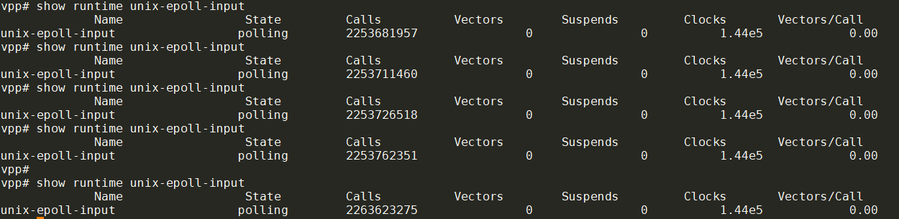

在container里面使用vpp -c /etc/vpp/startup.conf启动vpp.
container的IP是:eth0 172.17.0.53/16
使用vppctl create host-interface name eth0可以创建一个host interface host-eth0
vpp# create host-interface ?
create host-interface create host-interface [v2] name <ifname> [num-rx-queues <n>] [num-tx-queues <n>] [hw-addr <mac-addr>] [mode ip] [qdisc-bypass-disable] [cksum-gso-disable]
按照这个命令的解释:
Create a host interface that will attach to a linux AF_PACKET interface, one side of a veth pair. The veth pair must already exist. Once created, a new host interface will exist in VPP with the name 'host-
', where ' ' is the name of the specified veth pair. Use the show interface command to display host interface details.
本质上, host-interface host是在eth0上的一个AF_PACKET的SOCK_RAW socket.
下面从代码流程上解读一下这个host interface.
1. 创建host interface
在src/plugins/af_packet/cli.c中, 注册create host-interface命令:
VLIB_CLI_COMMAND (af_packet_create_command, static) = {
.path = "create host-interface",
.short_help = "create host-interface [v2] name <ifname> [num-rx-queues <n>] "
"[num-tx-queues <n>] [hw-addr <mac-addr>] [mode ip] "
"[qdisc-bypass-disable] [cksum-gso-disable]",
.function = af_packet_create_command_fn,
};
这个命令支持一下的选项:
name %srx-size %utx-size %urx-per-block %utx-per-block %unum-rx-queues %u: 默认1. 一个queue对应一个socketnum-tx-queues %u: 默认1. 一个queue对应一个socketqdisc-bypass-disable: 默认enable qdiscipline bypasscksum-gso-disable: 默认enable gso chksummode ip: 默认是AF_PACKET_IF_MODE_ETHERNET, 如果是ip模式的话, 看不到二层头v2: 默认是TPACKET_V3hw-addr %U
简要流程如下:
af_packet_create_if
//1. 对应的host interface必须up
//2. 标记是否bridge
//3. 为每个queue都创建
af_packet_device_init
for each queue
af_packet_queue_init
create_packet_sock
//new a socket
fd = socket (AF_PACKET, SOCK_RAW, htons (ETH_P_ALL))
//bind rx packet socket
bind(fd, (struct sockaddr *) &sll, sizeof (sll))
//set rx packet interface version
setsockopt(fd, SOL_PACKET, PACKET_VERSION, &ver, sizeof (ver))
//set packet tx ring
setsockopt (fd, SOL_PACKET, PACKET_LOSS, &opt, sizeof (opt)
//set packet vnet hdr
setsockopt (fd, SOL_PACKET, PACKET_VNET_HDR, &opt2, sizeof (opt2)
//set qdisc bypass
setsockopt (fd, SOL_PACKET, PACKET_QDISC_BYPASS, &opt, sizeof (opt)
//set fanout options
setsockopt (*fd, SOL_PACKET, PACKET_FANOUT, &fanout, sizeof (fanout)
//set packet rx ring
setsockopt (*fd, SOL_PACKET, PACKET_RX_RING, rx_req, req_sz)
//set packet tx ring options
setsockopt (*fd, SOL_PACKET, PACKET_TX_RING, tx_req, req_sz)
//mmap fd 到tx/rx queue, 这些queue是vpp维护的
ring->ring_start_addr = mmap (NULL, ring_sz, PROT_READ | PROT_WRITE, MAP_SHARED | MAP_LOCKED, *fd, 0)
vec_add1 (apif->fds, fd);
vec_add1 (apif->rings, ring);
2. 发送packet到host-eth0
在src/plugins/af_packet/device.c里注册了tx相关的函数
VNET_DEVICE_CLASS (af_packet_device_class) = {
.name = "af-packet",
.format_device_name = format_af_packet_device_name,
.format_device = format_af_packet_device,
.format_tx_trace = format_af_packet_tx_trace,
.tx_function_n_errors = AF_PACKET_TX_N_ERROR,
.tx_function_error_strings = af_packet_tx_func_error_strings,
.rx_redirect_to_node = af_packet_set_interface_next_node,
.clear_counters = af_packet_clear_hw_interface_counters,
.admin_up_down_function = af_packet_interface_admin_up_down,
.mac_addr_change_function = af_packet_set_mac_address_function,
.rx_mode_change_function = af_packet_interface_rx_mode_change,
};
这个af_packet_device_class的简要定流程如下:
VNET_DEVICE_CLASS_TX_FN (af_packet_device_class) (vlib_main_t * vm,
vlib_node_runtime_t * node,
vlib_frame_t * frame)
vnet_hw_if_tx_frame_t *tf = vlib_frame_scalar_args (frame);
u16 queue_id = tf->queue_id;
//找到tx_queue
af_packet_queue_t *tx_queue = vec_elt_at_index (apif->tx_queues, queue_id);
//需要发送的frame的大小和个数
frame_size = tx_queue->tx_req->req.tp_frame_size;
frame_num = tx_queue->tx_req->req.tp_frame_nr;
//tx ring的起始地址和待发送的frame
block_start = tx_queue->tx_ring[0];
tx_frame = tx_queue->next_tx_frame;
while(n_left)
//找到待发送的第一个header
tph3 = (tpacket3_hdr_t *) (block_start + tx_frame * frame_size);
//检查状态
//如果是tph3->tp_status是TP_STATUS_SEND_REQUEST | TP_STATUS_SENDING就break
//计算好需要memcpy的位置和大小后, 做memcpy
//注意memcpy是在while里进行的, 每个frame可能是多个离散的buffer, 这些buffer都有VLIB_BUFFER_NEXT_PRESENT标记
clib_memcpy_fast ((u8 *) tph3 + tpacket_align + offset, vlib_buffer_get_current (b0), len);
//置TP_STATUS_SEND_REQUEST标记
tph2->tp_len = tph2->tp_snaplen = offset;
tph2->tp_status = TP_STATUS_SEND_REQUEST;
//前面在循环里memcpy每个frame后, 在其header里面置位tph3->tp_status = TP_STATUS_SEND_REQUEST
//马上调用sendto通知kernel去触发底层driver的发送函数真正发送packet
sendto (tx_queue->fd, NULL, 0, MSG_DONTWAIT, NULL, 0)
整个流程下来
- mmap + memcpy的作用是避免第二次内存拷贝, 即如果使用send等函数带来的从用户态到内核态的内存拷贝.
- 还是要调用
sendto()来trigger内核做真正的dev_xmit().
/usr/include/linux/if_packet.h里面定义了tpacket3_hdr
The tpacket3_hdr structure is part of the Linux AF_PACKET socket family, specifically for version 3 (TPACKET_V3) of the packet mmap ring buffer. This structure provides the necessary metadata for each packet in the ring buffer, allowing user-space applications to interface efficiently with the kernel for high-speed packet capture and transmission.
struct tpacket3_hdr {
__u32 tp_next_offset;
__u32 tp_sec;
__u32 tp_nsec;
__u32 tp_snaplen;
__u32 tp_len;
__u32 tp_status;
__u16 tp_mac;
__u16 tp_net;
/* pkt_hdr variants */
union {
struct tpacket_hdr_variant1 hv1;
};
__u8 tp_padding[8];
};
3. 从host-eth0收packet
在src/plugins/af_packet/node.c
typedef struct
{
u32 dev_instance;
u32 queue_id;
} vnet_hw_if_rxq_poll_vector_t;
VLIB_NODE_FN (af_packet_input_node) (vlib_main_t * vm,
vlib_node_runtime_t * node,
vlib_frame_t * frame)
{
u32 n_rx_packets = 0;
af_packet_main_t *apm = &af_packet_main;
vnet_hw_if_rxq_poll_vector_t *pv;
//这个pv应该是个可变数组, 元素是上面的vnet_hw_if_rxq_poll_vector_t, 代表一个queue有interrupt到来了
pv = vnet_hw_if_get_rxq_poll_vector (vm, node);
for (int i = 0; i < vec_len (pv); i++)
{
af_packet_if_t *apif;
apif = vec_elt_at_index (apm->interfaces, pv[i].dev_instance);
if (apif->is_admin_up)
{
if (apif->is_cksum_gso_enabled)
n_rx_packets += af_packet_device_input_fn (vm, node, frame, apif,
pv[i].queue_id, 1);
else
n_rx_packets += af_packet_device_input_fn (vm, node, frame, apif,
pv[i].queue_id, 0);
}
}
return n_rx_packets;
}
VLIB_REGISTER_NODE (af_packet_input_node) = {
.name = "af-packet-input",
.flags = VLIB_NODE_FLAG_TRACE_SUPPORTED,
.sibling_of = "device-input",
.format_trace = format_af_packet_input_trace,
.type = VLIB_NODE_TYPE_INPUT,
.state = VLIB_NODE_STATE_INTERRUPT, //interrupt模式, 另外一个模式是VLIB_NODE_FLAG_ADAPTIVE_MODE
.n_errors = AF_PACKET_INPUT_N_ERROR,
.error_strings = af_packet_input_error_strings,
};
vpp框架调用到af_packet_input_node的时候, 说明incoming的packet已经到来了, 我猜也是通过epoll等机制kernel通知vpp框架的. 因为一个interface可以有多个queue, 所以在一个for循环里对每个queue调用af_packet_device_input_fn
af_packet_device_input_fn是核心的收报文函数, 比较复杂, 大致上就是从kernel的socket buffer里面, 拷贝到vpp的buffer里
//先申请frame
vlib_get_next_frame (vm, node, next_index, to_next, n_left_to_next);
//拷贝packet
clib_memcpy_fast (((u8 *) vlib_buffer_get_current (b0)) + bytes_copied + vlan_len, (u8 *) tph + tph->tp_mac + offset + bytes_copied,(bytes_to_copy - bytes_copied));
//这里应该是往vpp上层的协议栈走了
vlib_put_next_frame (vm, node, next_index, n_left_to_next);
4. RX/Tx ring的状态
在/usr/include/linux/if_packet.h有定义:
/* Rx ring - header status */
#define TP_STATUS_KERNEL 0
#define TP_STATUS_USER (1 << 0)
#define TP_STATUS_COPY (1 << 1)
#define TP_STATUS_LOSING (1 << 2)
#define TP_STATUS_CSUMNOTREADY (1 << 3)
#define TP_STATUS_VLAN_VALID (1 << 4) /* auxdata has valid tp_vlan_tci */
#define TP_STATUS_BLK_TMO (1 << 5)
#define TP_STATUS_VLAN_TPID_VALID (1 << 6) /* auxdata has valid tp_vlan_tpid */
#define TP_STATUS_CSUM_VALID (1 << 7)
#define TP_STATUS_GSO_TCP (1 << 8)
/* Tx ring - header status */
#define TP_STATUS_AVAILABLE 0
#define TP_STATUS_SEND_REQUEST (1 << 0)
#define TP_STATUS_SENDING (1 << 1)
#define TP_STATUS_WRONG_FORMAT (1 << 2)
/* Rx and Tx ring - header status */
#define TP_STATUS_TS_SOFTWARE (1 << 29)
#define TP_STATUS_TS_SYS_HARDWARE (1 << 30) /* deprecated, never set */
#define TP_STATUS_TS_RAW_HARDWARE (1U << 31)
5. trace packet
vppctl trace add命令可以追踪报文, 但和tcpdump不太一样:
- trace不是针对interface的, 而是针对input node的, 支持的node有
- af-packet-input: 主要是veth, 也可以是任何基于AF_PACKET类型的socket的input
- virtio-input: tap v2
- tapcli-rx: tap v1
- dpdk-input: dpdk, gbe, phys*
- 正如trace这个名字所说, trace会"追踪"input packet的整个处理路径, 每个路径下的node都有时间戳, 方便分析性能.
完整的支持trace的node列表:
- af-packet-input
- avf-input
- bond-process
- dpdk-crypto-input
- dpdk-input
- handoff-trace
- ixge-input
- memif-input
- mrvl-pp2-input
- netmap-input
- p2p-ethernet-input
- pg-input
- punt-socket-rx
- rdma-input
- session-queue
- tuntap-rx
- vhost-user-input
- virtio-input
- vmxnet3-input
这里的af-packet-input就是使用AF_PACKET raw socket over host interface的node, 在上面的node声明中, 可以看到有VLIB_NODE_FLAG_TRACE_SUPPORTED标记
VLIB_REGISTER_NODE (af_packet_input_node) = {
.name = "af-packet-input",
.flags = VLIB_NODE_FLAG_TRACE_SUPPORTED,
.sibling_of = "device-input",
.format_trace = format_af_packet_input_trace,
.type = VLIB_NODE_TYPE_INPUT,
.state = VLIB_NODE_STATE_INTERRUPT, //interrupt模式, 另外一个模式是VLIB_NODE_FLAG_ADAPTIVE_MODE
.n_errors = AF_PACKET_INPUT_N_ERROR,
.error_strings = af_packet_input_error_strings,
};
具体用法在官方文档
参考contiv的这篇文章
我的例子
vpp# trace add af-packet-input 100
vpp# ping 10.10.10.12
vpp# show trace
6. 小实验
用到的命令
vppctl create host-interface name eth0
vppctl set interface state host-eth0 up
vppctl set interface ip address host-eth0 10.10.10.11/24
vpp# trace add af-packet-input 100
vpp# show int addr
host-eth0 (up):
L3 10.10.10.11/24
local0 (dn):
vpp# show hardware-interfaces
Name Idx Link Hardware
host-eth0 1 up host-eth0
Link speed: unknown
RX Queues:
queue thread mode
0 main (0) interrupt
TX Queues:
TX Hash: [name: hash-eth-l34 priority: 50 description: Hash ethernet L34 headers]
queue shared thread(s)
0 no 0
Ethernet address 02:fe:12:85:26:b8
Linux PACKET socket interface v3
FEATURES:
qdisc-bpass-enabled
cksum-gso-enabled
RX Queue 0:
block size:65536 nr:160 frame size:2048 nr:5120 next block:133
TX Queue 0:
block size:69206016 nr:1 frame size:67584 nr:1024 next frame:312
available:1024 request:0 sending:0 wrong:0 total:1024
local0 0 down local0
Link speed: unknown
local
6.1. 框图
┌─────────────────────────────────────────────────┐ ┌─────────────────────────────────────────────────┐
│ Container2(vpp2) │ │ Container3(vpp3) │
│ │ │ │
│ │ │ │
│ ┌─────────────────────────────────┐ │ │ ┌─────────────────────────────────┐ │
│ │VPP │ │ │ │VPP │ │
│ │ │ │ │ │ │ │
│ │ │ │ │ │ │ │
│ │ host-eth0 │ │ │ │ host-eth0 │ │
│ │ 10.10.10.11/24 │ │ │ │ 10.10.10.12/24 │ │
│ │ 02:fe:12:85:26:b8 │ │ │ │ 02:fe:c6:ce:e3:7a │ │
│ └──────────────┬──────────────────┘ │ │ └──────────────┬──────────────────┘ │
│ │ │ │ │ │
│ │af_packet raw socket │ │ │af_packet raw socket │
│ │ │ │ │ │
│ │ │ │ │ │
└──────────────────────eth0───────────────────────┘ └──────────────────────eth0───────────────────────┘
172.17.0.53/16 172.17.0.54/16
02:42:ac:11:00:35 02:42:ac:11:00:36
│ │
│ │
│ │
│ │
│ ┌──────────────────────┐ │
│ │ │ │
│ │ docker0 bridge │ │
└───────────────────┤ ├─────────────────┘
│ │
└──────────────────────┘
6.2. from vpp2 ping vpp3
on vpp2
vpp# ping 10.10.10.12
116 bytes from 10.10.10.12: icmp_seq=1 ttl=64 time=25.8177 ms
116 bytes from 10.10.10.12: icmp_seq=2 ttl=64 time=9.0134 ms
116 bytes from 10.10.10.12: icmp_seq=3 ttl=64 time=16.9887 ms
116 bytes from 10.10.10.12: icmp_seq=4 ttl=64 time=21.0252 ms
116 bytes from 10.10.10.12: icmp_seq=5 ttl=64 time=12.9954 ms
Statistics: 5 sent, 5 received, 0% packet loss
tcpdump -n: 注意这里我使用-n选项, 防止tcpdump自身解析DNS带来的不必要的报文交互, 这点很重要!
用更高级的termshark的效果更好:
6.2.1. on vpp3(ping的对象)
vpp# show trace
------------------- Start of thread 0 vpp_main -------------------
Packet 1
23:30:10:687985: af-packet-input
af_packet: hw_if_index 1 rx-queue 0 next-index 4
block 56:
address 0x7fb98507b000 version 2 seq_num 6777 pkt_num 0
tpacket3_hdr:
status 0x81 len 110 snaplen 110 mac 92 net 106
sec 0x66a8a1cf nsec 0x1c79c3d1 vlan 0 vlan_tpid 0
vnet-hdr:
flags 0x00 gso_type 0x00 hdr_len 0
gso_size 0 csum_start 0 csum_offset 0
23:30:10:688220: ethernet-input
IP4: 02:fe:12:85:26:b8 -> 02:fe:c6:ce:e3:7a
23:30:10:688657: ip4-input
ICMP: 10.10.10.11 -> 10.10.10.12
tos 0x00, ttl 254, length 96, checksum 0x9472 dscp CS0 ecn NON_ECN
fragment id 0x0000
ICMP echo_request checksum 0x9b3d id 61761
23:30:10:688760: ip4-lookup
fib 0 dpo-idx 7 flow hash: 0x00000000
ICMP: 10.10.10.11 -> 10.10.10.12
tos 0x00, ttl 254, length 96, checksum 0x9472 dscp CS0 ecn NON_ECN
fragment id 0x0000
ICMP echo_request checksum 0x9b3d id 61761
23:30:10:689398: ip4-receive
fib:0 adj:7 flow:0x00000000
ICMP: 10.10.10.11 -> 10.10.10.12
tos 0x00, ttl 254, length 96, checksum 0x9472 dscp CS0 ecn NON_ECN
fragment id 0x0000
ICMP echo_request checksum 0x9b3d id 61761
23:30:10:689471: ip4-icmp-input
ICMP: 10.10.10.11 -> 10.10.10.12
tos 0x00, ttl 254, length 96, checksum 0x9472 dscp CS0 ecn NON_ECN
fragment id 0x0000
ICMP echo_request checksum 0x9b3d id 61761
23:30:10:689602: ip4-icmp-echo-request
ICMP: 10.10.10.11 -> 10.10.10.12
tos 0x00, ttl 254, length 96, checksum 0x9472 dscp CS0 ecn NON_ECN
fragment id 0x0000
ICMP echo_request checksum 0x9b3d id 61761
23:30:10:689826: ip4-load-balance
fib 0 dpo-idx 2 flow hash: 0x00000000
ICMP: 10.10.10.12 -> 10.10.10.11
tos 0x00, ttl 64, length 96, checksum 0x78bd dscp CS0 ecn NON_ECN
fragment id 0xd9b5
ICMP echo_reply checksum 0xa33d id 61761
23:30:10:689913: ip4-rewrite
tx_sw_if_index 1 dpo-idx 2 : ipv4 via 10.10.10.11 host-eth0: mtu:9000 next:3 flags:[] 02fe128526b802fec6cee37a0800 flow hash: 0x00000000
00000000: 02fe128526b802fec6cee37a080045000060d9b50000400178bd0a0a0a0c0a0a
00000020: 0a0b0000a33df14100012946a6e81ac8170100010203040506070809
23:30:10:690055: host-eth0-output
host-eth0 flags 0x02180005
IP4: 02:fe:c6:ce:e3:7a -> 02:fe:12:85:26:b8
ICMP: 10.10.10.12 -> 10.10.10.11
tos 0x00, ttl 64, length 96, checksum 0x78bd dscp CS0 ecn NON_ECN
fragment id 0xd9b5
ICMP echo_reply checksum 0xa33d id 61761
23:30:10:690444: host-eth0-tx
af_packet: hw_if_index 1 tx-queue 0
tpacket3_hdr:
status 0x1 len 120 snaplen 120 mac 0 net 0
sec 0x0 nsec 0x0 vlan 0 vlan_tpid 0
vnet-hdr:
flags 0x00 gso_type 0x00 hdr_len 0
gso_size 0 csum_start 0 csum_offset 0
buffer 0x94832:
current data 0, length 110, buffer-pool 0, ref-count 1, trace handle 0x0
local l2-hdr-offset 0 l3-hdr-offset 14
IP4: 02:fe:c6:ce:e3:7a -> 02:fe:12:85:26:b8
ICMP: 10.10.10.12 -> 10.10.10.11
tos 0x00, ttl 64, length 96, checksum 0x78bd dscp CS0 ecn NON_ECN
fragment id 0xd9b5
ICMP echo_reply checksum 0xa33d id 61761
Packet 2
23:30:11:671324: af-packet-input
af_packet: hw_if_index 1 rx-queue 0 next-index 4
block 57:
address 0x7fb98508b000 version 2 seq_num 6778 pkt_num 0
tpacket3_hdr:
status 0x81 len 110 snaplen 110 mac 92 net 106
sec 0x66a8a1d0 nsec 0x1bda7f1c vlan 0 vlan_tpid 0
vnet-hdr:
flags 0x00 gso_type 0x00 hdr_len 0
gso_size 0 csum_start 0 csum_offset 0
23:30:11:671337: ethernet-input
IP4: 02:fe:12:85:26:b8 -> 02:fe:c6:ce:e3:7a
23:30:11:671343: ip4-input
ICMP: 10.10.10.11 -> 10.10.10.12
tos 0x00, ttl 254, length 96, checksum 0x9472 dscp CS0 ecn NON_ECN
fragment id 0x0000
ICMP echo_request checksum 0xe01b id 61761
23:30:11:671373: ip4-lookup
fib 0 dpo-idx 7 flow hash: 0x00000000
ICMP: 10.10.10.11 -> 10.10.10.12
tos 0x00, ttl 254, length 96, checksum 0x9472 dscp CS0 ecn NON_ECN
fragment id 0x0000
ICMP echo_request checksum 0xe01b id 61761
23:30:11:671376: ip4-receive
fib:0 adj:7 flow:0x00000000
ICMP: 10.10.10.11 -> 10.10.10.12
tos 0x00, ttl 254, length 96, checksum 0x9472 dscp CS0 ecn NON_ECN
fragment id 0x0000
ICMP echo_request checksum 0xe01b id 61761
23:30:11:671377: ip4-icmp-input
ICMP: 10.10.10.11 -> 10.10.10.12
tos 0x00, ttl 254, length 96, checksum 0x9472 dscp CS0 ecn NON_ECN
fragment id 0x0000
ICMP echo_request checksum 0xe01b id 61761
23:30:11:671378: ip4-icmp-echo-request
ICMP: 10.10.10.11 -> 10.10.10.12
tos 0x00, ttl 254, length 96, checksum 0x9472 dscp CS0 ecn NON_ECN
fragment id 0x0000
ICMP echo_request checksum 0xe01b id 61761
23:30:11:671381: ip4-load-balance
fib 0 dpo-idx 2 flow hash: 0x00000000
ICMP: 10.10.10.12 -> 10.10.10.11
tos 0x00, ttl 64, length 96, checksum 0x609e dscp CS0 ecn NON_ECN
fragment id 0xf1d4
ICMP echo_reply checksum 0xe81b id 61761
23:30:11:671383: ip4-rewrite
tx_sw_if_index 1 dpo-idx 2 : ipv4 via 10.10.10.11 host-eth0: mtu:9000 next:3 flags:[] 02fe128526b802fec6cee37a0800 flow hash: 0x00000000
00000000: 02fe128526b802fec6cee37a080045000060f1d400004001609e0a0a0a0c0a0a
00000020: 0a0b0000e81bf141000240d849771bc8170100010203040506070809
23:30:11:671385: host-eth0-output
host-eth0 flags 0x02180005
IP4: 02:fe:c6:ce:e3:7a -> 02:fe:12:85:26:b8
ICMP: 10.10.10.12 -> 10.10.10.11
tos 0x00, ttl 64, length 96, checksum 0x609e dscp CS0 ecn NON_ECN
fragment id 0xf1d4
ICMP echo_reply checksum 0xe81b id 61761
23:30:11:671389: host-eth0-tx
af_packet: hw_if_index 1 tx-queue 0
tpacket3_hdr:
status 0x1 len 120 snaplen 120 mac 0 net 0
sec 0x0 nsec 0x0 vlan 0 vlan_tpid 0
vnet-hdr:
flags 0x00 gso_type 0x00 hdr_len 0
gso_size 0 csum_start 0 csum_offset 0
buffer 0x9480d:
current data 0, length 110, buffer-pool 0, ref-count 1, trace handle 0x1
local l2-hdr-offset 0 l3-hdr-offset 14
IP4: 02:fe:c6:ce:e3:7a -> 02:fe:12:85:26:b8
ICMP: 10.10.10.12 -> 10.10.10.11
tos 0x00, ttl 64, length 96, checksum 0x609e dscp CS0 ecn NON_ECN
fragment id 0xf1d4
ICMP echo_reply checksum 0xe81b id 61761
Packet 3
...
Packet 4
...
Packet 5
...
一个ICMP的ping报文在VPP的处理流程
packet 1: 整个处理过程大约2ms
- 23:30:10:687985: af-packet-input
- 23:30:10:688220: ethernet-input
- 23:30:10:688760: ip4-lookup
- 23:30:10:689398: ip4-receive
- 23:30:10:689471: ip4-icmp-input
- 23:30:10:689602: ip4-icmp-echo-request
- 23:30:10:689826: ip4-load-balance
- 23:30:10:689913: ip4-rewrite
- 23:30:10:690055: host-eth0-output
- 23:30:10:690444: host-eth0-tx
packet 2: 整个处理过程不到1ms
- 23:30:11:671324: af-packet-input
- 23:30:11:671337: ethernet-input
- 23:30:11:671343: ip4-input
- 23:30:11:671373: ip4-lookup
- 23:30:11:671376: ip4-receive
- 23:30:11:671377: ip4-icmp-input
- 23:30:11:671378: ip4-icmp-echo-request
- 23:30:11:671381: ip4-load-balance
- 23:30:11:671383: ip4-rewrite
- 23:30:11:671385: host-eth0-output
- 23:30:11:671389: host-eth0-tx
6.2.2. on VPP2(ping 发送方)
------------------- Start of thread 0 vpp_main -------------------
Packet 1
23:31:11:666212: af-packet-input
af_packet: hw_if_index 1 rx-queue 0 next-index 4
block 135:
address 0x7f110a840000 version 2 seq_num 5576 pkt_num 0
tpacket3_hdr:
status 0x81 len 110 snaplen 110 mac 92 net 106
sec 0x66a8a1cf nsec 0x1d12c6f5 vlan 0 vlan_tpid 0
vnet-hdr:
flags 0x00 gso_type 0x00 hdr_len 0
gso_size 0 csum_start 0 csum_offset 0
23:31:11:666400: ethernet-input
IP4: 02:fe:c6:ce:e3:7a -> 02:fe:12:85:26:b8
23:31:11:666728: ip4-input
ICMP: 10.10.10.12 -> 10.10.10.11
tos 0x00, ttl 64, length 96, checksum 0x78bd dscp CS0 ecn NON_ECN
fragment id 0xd9b5
ICMP echo_reply checksum 0xa33d id 61761
23:31:11:666923: ip4-lookup
fib 0 dpo-idx 7 flow hash: 0x00000000
ICMP: 10.10.10.12 -> 10.10.10.11
tos 0x00, ttl 64, length 96, checksum 0x78bd dscp CS0 ecn NON_ECN
fragment id 0xd9b5
ICMP echo_reply checksum 0xa33d id 61761
23:31:11:667032: ip4-receive
fib:0 adj:7 flow:0x00000000
ICMP: 10.10.10.12 -> 10.10.10.11
tos 0x00, ttl 64, length 96, checksum 0x78bd dscp CS0 ecn NON_ECN
fragment id 0xd9b5
ICMP echo_reply checksum 0xa33d id 61761
23:31:11:667234: ip4-icmp-input
ICMP: 10.10.10.12 -> 10.10.10.11
tos 0x00, ttl 64, length 96, checksum 0x78bd dscp CS0 ecn NON_ECN
fragment id 0xd9b5
ICMP echo_reply checksum 0xa33d id 61761
23:31:11:667382: ip4-icmp-echo-reply
ICMP4 echo id 61761 seq 1 send to cli node 712
Packet 2
23:31:12:650102: af-packet-input
af_packet: hw_if_index 1 rx-queue 0 next-index 4
block 136:
address 0x7f110a850000 version 2 seq_num 5577 pkt_num 0
tpacket3_hdr:
status 0x81 len 110 snaplen 110 mac 92 net 106
sec 0x66a8a1d0 nsec 0x1bea3b05 vlan 0 vlan_tpid 0
vnet-hdr:
flags 0x00 gso_type 0x00 hdr_len 0
gso_size 0 csum_start 0 csum_offset 0
23:31:12:650121: ethernet-input
IP4: 02:fe:c6:ce:e3:7a -> 02:fe:12:85:26:b8
23:31:12:650129: ip4-input
ICMP: 10.10.10.12 -> 10.10.10.11
tos 0x00, ttl 64, length 96, checksum 0x609e dscp CS0 ecn NON_ECN
fragment id 0xf1d4
ICMP echo_reply checksum 0xe81b id 61761
23:31:12:650132: ip4-lookup
fib 0 dpo-idx 7 flow hash: 0x00000000
ICMP: 10.10.10.12 -> 10.10.10.11
fragment id 0xf1d4
ICMP echo_reply checksum 0xe81b id 61761
23:31:12:650135: ip4-receive
fib:0 adj:7 flow:0x00000000
ICMP: 10.10.10.12 -> 10.10.10.11
tos 0x00, ttl 64, length 96, checksum 0x609e dscp CS0 ecn NON_ECN
fragment id 0xf1d4
ICMP echo_reply checksum 0xe81b id 61761
23:31:12:650137: ip4-icmp-input
ICMP: 10.10.10.12 -> 10.10.10.11
tos 0x00, ttl 64, length 96, checksum 0x609e dscp CS0 ecn NON_ECN
fragment id 0xf1d4
ICMP echo_reply checksum 0xe81b id 61761
fragment id 0xf1d4
ICMP echo_reply checksum 0xe81b id 61761
23:31:12:650138: ip4-icmp-echo-reply
ICMP4 echo id 61761 seq 2 send to cli node 712
Packet 3
23:31:13:658086: af-packet-input
af_packet: hw_if_index 1 rx-queue 0 next-index 4
block 137:
address 0x7f110a860000 version 2 seq_num 5578 pkt_num 0
tpacket3_hdr:
status 0x81 len 110 snaplen 110 mac 92 net 106
sec 0x66a8a1d1 nsec 0x1c64823c vlan 0 vlan_tpid 0
vnet-hdr:
flags 0x00 gso_type 0x00 hdr_len 0
gso_size 0 csum_start 0 csum_offset 0
23:31:13:658096: ethernet-input
IP4: 02:fe:c6:ce:e3:7a -> 02:fe:12:85:26:b8
23:31:13:658106: ip4-input
ICMP: 10.10.10.12 -> 10.10.10.11
tos 0x00, ttl 64, length 96, checksum 0x2076 dscp CS0 ecn NON_ECN
fragment id 0x31fd
ICMP echo_reply checksum 0x5406 id 61761
23:31:13:658109: ip4-lookup
fib 0 dpo-idx 7 flow hash: 0x00000000
ICMP: 10.10.10.12 -> 10.10.10.11
tos 0x00, ttl 64, length 96, checksum 0x2076 dscp CS0 ecn NON_ECN
fragment id 0x31fd
ICMP echo_reply checksum 0x5406 id 61761
23:31:13:658112: ip4-receive
fib:0 adj:7 flow:0x00000000
ICMP: 10.10.10.12 -> 10.10.10.11
tos 0x00, ttl 64, length 96, checksum 0x2076 dscp CS0 ecn NON_ECN
fragment id 0x31fd
ICMP echo_reply checksum 0x5406 id 61761
23:31:13:658114: ip4-icmp-input
ICMP: 10.10.10.12 -> 10.10.10.11
tos 0x00, ttl 64, length 96, checksum 0x2076 dscp CS0 ecn NON_ECN
fragment id 0x31fd
ICMP echo_reply checksum 0x5406 id 61761
23:31:13:658115: ip4-icmp-echo-reply
ICMP4 echo id 61761 seq 3 send to cli node 712
Packet 4
...
Packet 5
...
处理流程(ping 发送方) packet 1:
- 23:31:11:666212: af-packet-input
- 23:31:11:666400: ethernet-input
- 23:31:11:666728: ip4-input
- 23:31:11:666923: ip4-lookup
- 23:31:11:667032: ip4-receive
- 23:31:11:667234: ip4-icmp-input
- 23:31:11:667382: ip4-icmp-echo-reply
packet 2:
- 23:31:12:650102: af-packet-input
- 23:31:12:650121: ethernet-input
- 23:31:12:650129: ip4-input
- 23:31:12:650132: ip4-lookup
- 23:31:12:650135: ip4-receive
- 23:31:12:650137: ip4-icmp-input
- 23:31:12:650138: ip4-icmp-echo-reply
6.2.3. 分析
处理流程(ping 发送方)
packet 1: 这里只能显示对方发过来的ICMP echo reply报文到达后的处理过程. 实际上也不用怎么处理, 只收报就好了. 这里大概1ms
* 23:31:11:666212: af-packet-input
* 23:31:11:666400: ethernet-input
* 23:31:11:666728: ip4-input
* 23:31:11:666923: ip4-lookup
* 23:31:11:667032: ip4-receive
* 23:31:11:667234: ip4-icmp-input
* 23:31:11:667382: ip4-icmp-echo-reply
packet 2: 不到1ms
* 23:31:12:650102: af-packet-input
* 23:31:12:650121: ethernet-input
* 23:31:12:650129: ip4-input
* 23:31:12:650132: ip4-lookup
* 23:31:12:650135: ip4-receive
* 23:31:12:650137: ip4-icmp-input
* 23:31:12:650138: ip4-icmp-echo-reply
处理流程(ping接收方)
packet 1: 整个处理过程大约2ms
* 23:30:10:687985: af-packet-input
* 23:30:10:688220: ethernet-input
* 23:30:10:688760: ip4-lookup
* 23:30:10:689398: ip4-receive
* 23:30:10:689471: ip4-icmp-input
* 23:30:10:689602: ip4-icmp-echo-request
* 23:30:10:689826: ip4-load-balance
* 23:30:10:689913: ip4-rewrite
* 23:30:10:690055: host-eth0-output
* 23:30:10:690444: host-eth0-tx
packet 2: 整个处理过程不到1ms
* 23:30:11:671324: af-packet-input
* 23:30:11:671337: ethernet-input
* 23:30:11:671343: ip4-input
* 23:30:11:671373: ip4-lookup
* 23:30:11:671376: ip4-receive
* 23:30:11:671377: ip4-icmp-input
* 23:30:11:671378: ip4-icmp-echo-request
* 23:30:11:671381: ip4-load-balance
* 23:30:11:671383: ip4-rewrite
* 23:30:11:671385: host-eth0-output
* 23:30:11:671389: host-eth0-tx
注意到几个很tricky的地方:
- tcpdump不能抓到eth0的outgoing的packet -- 很奇怪, 因为在container里面的normal ping是可以抓到eth0发出的报文的
- vpp trace系统关注的是一个packet从入口(input)开始的的处理流程
- 在ping request的发送方(vpp2)上, 只能看到从(vpp 3)返回的echo reply 报文
- 在ping的对象(vpp3)上, 可以看到从
af-packet-input开始, vpp自己的协议栈处理ICMP echo request报文, 到从host-eth0-tx发出ICMP echo reply报文, 这个完整的处理流程
- vpp trace显示的时间和系统时间对不上, 两个vpp系统的时间也对不上... 这点很不友好, 对报文的处理时间的分析带来很大困扰, 所以只能从各自的处理时间来分析:
- 被ping的一方稍微处理时间长点, 大概2ms
- ping的发起方的接收ICMP echo reply的处理时间一般是1ms
- ping的发起方的发送路径估计也是小于1ms
- 仅从这部分看, vpp处理ICMP的效率远远慢于kernel
- 实际上, 从ping的统计来看, 其处理时间有点太大了: ``` vpp# ping 10.10.10.12 116 bytes from 10.10.10.12: icmp_seq=1 ttl=64 time=25.8177 ms 116 bytes from 10.10.10.12: icmp_seq=2 ttl=64 time=9.0134 ms 116 bytes from 10.10.10.12: icmp_seq=3 ttl=64 time=16.9887 ms 116 bytes from 10.10.10.12: icmp_seq=4 ttl=64 time=21.0252 ms 116 bytes from 10.10.10.12: icmp_seq=5 ttl=64 time=12.9954 ms
Statistics: 5 sent, 5 received, 0% packet loss
## 为什么tcpdump抓不到outgoing的报文
最后的packet肯定是从eth0发出的, 也就是必须走kernel, 那么tcpdump不能抓到就非常少见.
根据[这篇文章](https://chnhaoran.github.io/blog/how-is-tcpdump-working/)的介绍:
* RX side: XDP -> Tcpdump -> TC -> network stack
* TX side: network stack -> TC -> Tcpdump
注意到`host-interface qdisc-bypass`有TC相关的配置. 试试看:
在vpp2和vpp3上, 用vppctl执行:
```shell
#先disable qdisc-bypass
set host-interface qdisc-bypass host-eth0 disable
#再重新trace
clear trace
trace add af-packet-input 100
#再ping
vpp# ping 10.10.10.12
116 bytes from 10.10.10.12: icmp_seq=1 ttl=64 time=16.6176 ms
116 bytes from 10.10.10.12: icmp_seq=2 ttl=64 time=15.5092 ms
116 bytes from 10.10.10.12: icmp_seq=3 ttl=64 time=23.3749 ms
116 bytes from 10.10.10.12: icmp_seq=4 ttl=64 time=15.4622 ms
116 bytes from 10.10.10.12: icmp_seq=5 ttl=64 time=15.5163 ms
Statistics: 5 sent, 5 received, 0% packet loss
在vpp2和vpp3的container内部分别tcpdump -n得到:
这样就可以抓到从host-eth0发送的报文, 该报文通过af_packet的raw socket走eth0发送出去.
6.3. 时间都花在哪了?
从tcpdump的时间戳来看, 其实vpp的ping没有它自己显示的那么慢:
//大概7ms
03:29:43.263620 IP 10.10.10.11 > 10.10.10.12: ICMP echo request, id 60350, seq 1, length 76
03:29:43.270918 IP 10.10.10.12 > 10.10.10.11: ICMP echo reply, id 60350, seq 1, length 76
//大概4ms
03:29:44.264924 IP 10.10.10.11 > 10.10.10.12: ICMP echo request, id 60350, seq 2, length 76
03:29:44.268348 IP 10.10.10.12 > 10.10.10.11: ICMP echo reply, id 60350, seq 2, length 76
//大概8ms
03:29:45.268100 IP 10.10.10.11 > 10.10.10.12: ICMP echo request, id 60350, seq 3, length 76
03:29:45.276426 IP 10.10.10.12 > 10.10.10.11: ICMP echo reply, id 60350, seq 3, length 76
//大概4ms
03:29:46.260913 IP 10.10.10.11 > 10.10.10.12: ICMP echo request, id 60350, seq 4, length 76
03:29:46.264400 IP 10.10.10.12 > 10.10.10.11: ICMP echo reply, id 60350, seq 4, length 76
//大概4ms
03:29:47.264976 IP 10.10.10.11 > 10.10.10.12: ICMP echo request, id 60350, seq 5, length 76
03:29:47.268299 IP 10.10.10.12 > 10.10.10.11: ICMP echo reply, id 60350, seq 5, length 76
但因为tcpdump的时间不包括ping发送方的发包时间和用户态收报时间, 从图片右边vpp3的时间戳来看, 大概比左侧的时间差小个1ms左右, 那么这个1ms就是报文在vpp3的eth0和vpp2的eth0往返的时间.
那为什么在vpp2的ping看来, 时间多那么多呢?
6.3.1. vpp运行时状态
在跟踪vpp之前, 我们先要对vpp的代码和运行框架有所了解:
- vpp启动的时候使用
vpp -c /etc/vpp/startup.conf, 看到vpp只有一个主进程. 用vppctl show threads可以看到目前只有vpp_main一个线程.vpp# show threads ID Name Type LWP Sched Policy (Priority) lcore Core Socket State 0 vpp_main 63 (nil) (n/a) n/a n/a n/a - 用
vppctl show runtime看到各种运行时统计, 里面有很多东西都很有意思; 用vppctl show runtime verbose能看到更多的统计vector rates in 1.9398e-2, out 5.2409e-4, drop 1.8889e-2, punt 0.0000e0 Name State Calls Vectors Suspends Clocks Vectors/Call acl-plugin-fa-cleaner-process event wait 0 0 1 2.44e5 0.00 af-packet-input interrupt wa 10170 14842 0 1.94e6 1.46 api-rx-from-ring any wait 0 0 38261 2.23e5 0.00 arp-input active 4431 4452 0 1.92e5 1.00 arp-reply active 4431 4452 0 2.74e6 1.00 avf-process event wait 0 0 1 1.19e5 0.00 bfd-process event wait 0 0 1 1.22e5 0.00 bond-process event wait 0 0 1 2.23e5 0.00 cnat-scanner-process event wait 0 0 1 6.44e5 0.00 dev-config done 1 0 0 2.98e5 0.00 dhcp-client-process any wait 0 0 766 2.37e6 0.00 dhcp6-client-cp-process any wait 0 0 1 2.29e5 0.00 dhcp6-pd-client-cp-process any wait 0 0 1 6.23e4 0.00 dhcp6-pd-reply-publisher-proce event wait 0 0 1 2.28e5 0.00 dhcp6-reply-publisher-process event wait 0 0 1 2.88e5 0.00 drop active 12752 14453 0 3.13e5 1.13 error-drop active 12752 14453 0 3.36e5 1.13 ethernet-input active 10022 14842 0 1.18e6 1.48 fib-walk any wait 0 0 382461 6.43e4 0.00 flow-report-process any wait 0 0 1 1.09e4 0.00 flowprobe-timer-process any wait 0 0 1 1.61e5 0.00 host-eth0-output active 401 401 0 6.35e4 1.00 host-eth0-tx active 401 401 0 6.37e5 1.00 igmp-timer-process event wait 0 0 1 1.96e5 0.00 ikev2-manager-process event wait 0 0 1 2.64e5 0.00 ioam-export-process any wait 0 0 1 3.34e5 0.00 ip-neighbor-event event wait 0 0 1 3.29e5 0.00 ip4-drop active 1441 1640 0 2.68e6 1.14 ip4-full-reassembly-expire-wal any wait 0 0 15252086 1.68e4 0.00 ip4-glean active 6 6 0 1.77e5 1.00 ip4-icmp-echo-reply active 380 380 0 4.00e4 1.00 ip4-icmp-echo-request active 15 15 0 1.27e5 1.00 ip4-icmp-input active 395 395 0 2.86e4 1.00 ip4-input active 1830 2029 0 2.19e6 1.11 ip4-load-balance active 15 15 0 4.93e4 1.00 ip4-lookup active 2216 2415 0 1.49e6 1.09 ip4-neighbor-age-process event wait 0 0 1 7.74e4 0.00 ip4-receive active 395 395 0 2.78e4 1.00 ip4-rewrite active 395 395 0 3.48e4 1.00 ip4-sv-reassembly-expire-walk any wait 0 0 76500 2.42e5 0.00 ip6-full-reassembly-expire-wal any wait 0 0 15252086 1.70e4 0.00 ip6-input active 312 321 0 1.22e6 1.03 ip6-mld-process any wait 0 0 764840 1.65e4 0.00 ip6-neighbor-age-process event wait 0 0 1 2.94e5 0.00 ip6-not-enabled active 312 321 0 1.01e6 1.03 ip6-ra-process any wait 0 0 764840 3.01e4 0.00 ip6-rs-process any wait 0 0 1 2.92e5 0.00 ip6-sv-reassembly-expire-walk any wait 0 0 76500 4.58e5 0.00 l2-arp-term-publisher event wait 0 0 1 1.97e4 0.00 l2fib-mac-age-scanner-process event wait 0 0 1 5.25e5 0.00 lldp-process event wait 0 0 1 2.06e5 0.00 memif-process event wait 0 0 1 1.19e5 0.00 nat44-ei-ha-process event wait 0 0 1 1.18e4 0.00 nsh-md2-ioam-export-process any wait 0 0 1 1.65e5 0.00 rd-cp-process any wait 0 0 1 2.89e5 0.00 send-dhcp6-client-message-proc any wait 0 0 1 1.27e5 0.00 send-dhcp6-pd-client-message-p any wait 0 0 1 2.12e5 0.00 startup-config-process done 1 0 1 3.82e4 0.00 statseg-collector-process time wait 0 0 76500 2.42e7 0.00 udp-ping-process any wait 0 0 1 1.14e5 0.00 unix-cli-new-session event wait 0 0 34 7.88e5 0.00 unix-cli-process-0 event wait 7 0 4995 8.99e8 0.00 unix-cli-process-1 active 0 0 312 1.64e5 0.00 unix-epoll-input polling 11993183211 0 0 1.52e5 0.00 vhost-user-process any wait 0 0 1 9.34e4 0.00 vhost-user-send-interrupt-proc any wait 0 0 1 2.58e5 0.00 vpe-link-state-process event wait 0 0 3 2.88e5 0.00 vrrp-periodic-process event wait 0 0 1 7.99e4 0.00 vxlan-gpe-ioam-export-process any wait 0 0 1 2.52e5 0.00 wg-timer-manager event wait 0 0 1 1.48e5 0.00 /bin/vpp本身并不大, 核心库如下, 最关键的应该就是最大的那个libvnet.so
# ls -lh /lib/lib*.24.06
-rwxr-xr-x 1 root root 49.9K Jul 24 06:22 /lib/libnat.so.24.06
-rwxr-xr-x 1 root root 133.8K Jul 24 06:22 /lib/libsvm.so.24.06
-rwxr-xr-x 1 root root 29.7K Jul 24 06:22 /lib/libsvmdb.so.24.06
-rwxr-xr-x 1 root root 61.6K Jul 24 06:22 /lib/libvapiclient.so.24.06
-rwxr-xr-x 1 root root 13.7K Jul 24 06:22 /lib/libvatclient.so.24.06
-rwxr-xr-x 1 root root 13.7K Jul 24 06:22 /lib/libvatplugin.so.24.06
-rwxr-xr-x 1 root root 66.0K Jul 24 06:22 /lib/libvcl_ldpreload.so.24.06
-rwxr-xr-x 1 root root 1.3M Jul 24 06:22 /lib/libvlib.so.24.06
-rwxr-xr-x 1 root root 66.4K Jul 24 06:22 /lib/libvlibapi.so.24.06
-rwxr-xr-x 1 root root 191.8K Jul 24 06:22 /lib/libvlibmemory.so.24.06
-rwxr-xr-x 1 root root 41.8K Jul 24 06:22 /lib/libvlibmemoryclient.so.24.06
-rwxr-xr-x 1 root root 17.7M Jul 24 06:22 /lib/libvnet.so.24.06
-rwxr-xr-x 1 root root 37.7K Jul 24 06:22 /lib/libvppapiclient.so.24.06
-rwxr-xr-x 1 root root 250.4K Jul 24 06:22 /lib/libvppcom.so.24.06
-rwxr-xr-x 1 root root 670.3K Jul 24 06:22 /lib/libvppinfra.so.24.06
-rwxr-xr-x 1 root root 13.8K Jul 24 06:22 /lib/libvppmem_preload.so.24.06
- vpp使用了plugin机制, 用
vppctl show plugins可以看到load的plugin, 基本上主流的协议都支持:
# ls /lib/vpp_plugins
abf_plugin.so det44_plugin.so hsi_plugin.so lisp_unittest_plugin.so oddbuf_plugin.so svs_plugin.so
acl_plugin.so dev_ena_plugin.so http_plugin.so lldp_plugin.so perfmon_plugin.so tlsopenssl_plugin.so
adl_plugin.so dev_iavf_plugin.so http_static_plugin.so mactime_plugin.so ping_plugin.so tracedump_plugin.so
af_packet_plugin.so dhcp_plugin.so idpf_plugin.so map_plugin.so pnat_plugin.so tracenode_plugin.so
arping_plugin.so dispatch_trace_plugin.so igmp_plugin.so mdata_plugin.so pppoe_plugin.so unittest_plugin.so
avf_plugin.so dma_intel_plugin.so ikev2_plugin.so memif_plugin.so prom_plugin.so urpf_plugin.so
bufmon_plugin.so dns_plugin.so ila_plugin.so mss_clamp_plugin.so snort_plugin.so vhost_plugin.so
builtinurl_plugin.so dslite_plugin.so ioam_plugin.so nat44_ei_plugin.so srmpls_plugin.so vmxnet3_plugin.so
cdp_plugin.so fateshare_plugin.so ip_session_redirect_plugin.so nat64_plugin.so srv6ad_plugin.so vrrp_plugin.so
cnat_plugin.so flowprobe_plugin.so l2tp_plugin.so nat66_plugin.so srv6adflow_plugin.so vxlan_plugin.so
crypto_native_plugin.so geneve_plugin.so l3xc_plugin.so nat_plugin.so srv6am_plugin.so wireguard_plugin.so
crypto_openssl_plugin.so gre_plugin.so lacp_plugin.so npt66_plugin.so srv6as_plugin.so
crypto_sw_scheduler_plugin.so gtpu_plugin.so lb_plugin.so nsh_plugin.so srv6mobile_plugin.so
ct6_plugin.so hs_apps_plugin.so lisp_plugin.so nsim_plugin.so stn_plugin.so
pmap $(pidof vpp)可以看到vpp已经map的so, 其中就有af_packet_plugin.so
# pmap $(pidof vpp)
61: vpp -c /etc/vpp/startup.conf
000000013000f000 132K rw-s /dev/shm/global_vm
0000000130030000 16516K rw-s /dev/shm/vpe-api
0000000131051000 48888K rw-s /dev/shm/global_vm
0000000ffffff000 4K ---p [ anon ]
0000001000000000 38912K rw-s /memfd:buffers-numa-0
0000001002600000 16738304K ---p [ anon ]
000055cd3e879000 20K r--p /bin/vpp
000055cd3e87e000 68K r-xp /bin/vpp
000055cd3e88f000 24K r--p /bin/vpp
000055cd3e895000 4K r--p /bin/vpp
000055cd3e896000 4K rw-p /bin/vpp
000055cd3e897000 4K rw-p [ anon ]
000055cd3ea72000 4K ---p [heap]
000055cd3ea73000 36K rw-p [heap]
00007fb984cba000 4K ---p [ anon ]
00007fb984cbb000 256K rw-p [ anon ]
00007fb984cfb000 77824K rw-s socket:[1867794799]
00007fb9898fb000 4K ---p [ anon ]
00007fb9898fc000 64K rw-p [ anon ]
00007fb98990c000 4K ---p [ anon ]
00007fb98990d000 256K rw-p [ anon ]
#几乎所有的/lib/vpp_plugins/下面的so都在这里
00007fb98d627000 12K r--p /lib/vpp_plugins/af_packet_plugin.so
00007fb98d62a000 228K r-xp /lib/vpp_plugins/af_packet_plugin.so
00007fb98d663000 32K r--p /lib/vpp_plugins/af_packet_plugin.so
00007fb98d66b000 4K r--p /lib/vpp_plugins/af_packet_plugin.so
00007fb98d66c000 4K rw-p /lib/vpp_plugins/af_packet_plugin.so
...
00007fb9cd986000 8K r--p /usr/lib/libunwind.so.8.0.1
00007fb9cd988000 28K r-xp /usr/lib/libunwind.so.8.0.1
00007fb9cd98f000 12K r--p /usr/lib/libunwind.so.8.0.1
00007fb9cd992000 4K r--p /usr/lib/libunwind.so.8.0.1
00007fb9cd993000 4K rw-p /usr/lib/libunwind.so.8.0.1
00007fb9cd994000 40K rw-p [ anon ]
00007fb9cd99e000 20K r--p /lib/libsvm.so.24.06
00007fb9cd9a3000 92K r-xp /lib/libsvm.so.24.06
00007fb9cd9ba000 16K r--p /lib/libsvm.so.24.06
00007fb9cd9be000 4K r--p /lib/libsvm.so.24.06
00007fb9cd9bf000 4K rw-p /lib/libsvm.so.24.06
00007fb9cd9c0000 40K r--p /lib/libvppinfra.so.24.06
00007fb9cd9ca000 556K r-xp /lib/libvppinfra.so.24.06
00007fb9cda55000 68K r--p /lib/libvppinfra.so.24.06
00007fb9cda66000 8K r--p /lib/libvppinfra.so.24.06
00007fb9cda68000 4K rw-p /lib/libvppinfra.so.24.06
00007fb9cda69000 48K r--p /lib/libvlib.so.24.06
00007fb9cda75000 1160K r-xp /lib/libvlib.so.24.06
00007fb9cdb97000 76K r--p /lib/libvlib.so.24.06
00007fb9cdbaa000 8K r--p /lib/libvlib.so.24.06
00007fb9cdbac000 20K rw-p /lib/libvlib.so.24.06
00007fb9cdbb1000 4K rw-p [ anon ]
00007fb9cdbb2000 12K r--p /lib/libvlibapi.so.24.06
00007fb9cdbb5000 44K r-xp /lib/libvlibapi.so.24.06
00007fb9cdbc0000 8K r--p /lib/libvlibapi.so.24.06
00007fb9cdbc2000 4K r--p /lib/libvlibapi.so.24.06
00007fb9cdbc3000 4K rw-p /lib/libvlibapi.so.24.06
00007fb9cdbc4000 400K r--p /lib/libvnet.so.24.06
00007fb9cdc28000 15276K r-xp /lib/libvnet.so.24.06
00007fb9ceb13000 2160K r--p /lib/libvnet.so.24.06
00007fb9ced2f000 76K r--p /lib/libvnet.so.24.06
00007fb9ced42000 184K rw-p /lib/libvnet.so.24.06
00007fb9ced70000 140K rw-p [ anon ]
00007fb9ced93000 20K r--p /lib/libvlibmemory.so.24.06
00007fb9ced98000 124K r-xp /lib/libvlibmemory.so.24.06
00007fb9cedb7000 40K r--p /lib/libvlibmemory.so.24.06
00007fb9cedc1000 4K r--p /lib/libvlibmemory.so.24.06
00007fb9cedc2000 4K rw-p /lib/libvlibmemory.so.24.06
00007fb9cedc3000 80K r--p /lib/ld-musl-x86_64.so.1
00007fb9cedd7000 304K r-xp /lib/ld-musl-x86_64.so.1
00007fb9cee23000 216K r--p /lib/ld-musl-x86_64.so.1
00007fb9cee59000 4K r--p /lib/ld-musl-x86_64.so.1
00007fb9cee5a000 4K rw-p /lib/ld-musl-x86_64.so.1
00007fb9cee5b000 12K rw-p [ anon ]
00007fff2184f000 132K rw-p [stack]
00007fff218ca000 12K r--p [vvar]
00007fff218cd000 8K r-xp [vdso]
ffffffffff600000 4K r-xp [vsyscall]
mapped: 18057172K
6.3.2. 关于符号
在没有安装vpp-dbg时, 是看不到多少函数符号的:
- af_packet_plugin.so
# perf probe -x /lib/vpp_plugins/af_packet_plugin.so -F
.plt
af_packet_device_class_tx_fn_hsw
af_packet_device_class_tx_fn_icl
af_packet_device_class_tx_fn_skx
af_packet_input_node_fn_hsw
af_packet_input_node_fn_icl
af_packet_input_node_fn_skx
vlib_plugin_registration
#readelf能看到上面的符号, 同时也能看到af_packet_plugin.so要引用的其他so的符号, 比如ioctl mmap vlib_global_main vlib_put_next_frame vnet_device_main
readelf /lib/vpp_plugins/af_packet_plugin.so -a
#只有上面几个符号, 用nm都看不到符号
# nm /lib/vpp_plugins/af_packet_plugin.so
nm: /lib/vpp_plugins/af_packet_plugin.so: no symbols
安装vpp-dbg后, 符号表文件被安装到/usr/lib/debug目录下. 这些符号表是用objcopy --add-gnu-debuglink制作的, 所以和原始elf是有关联的
- af_packet_plugin.so
# nm和readelf 原始的bin或者so 显示和没安装debug符号表一样
# 但对.debug文件, 可以看到更多的符号
nm /usr/lib/debug/lib/vpp_plugins/af_packet_plugin.so.debug
readelf /usr/lib/debug/lib/vpp_plugins/af_packet_plugin.so.debug -a
# 这里我们重点关注 perf probe -F, 可以被probe的函数:
perf probe -x /lib/vpp_plugins/af_packet_plugin.so -F
6.3.3. 找到关键函数
perf probe -x /lib/vpp_plugins/af_packet_plugin.so -F | grep af_packet_input_node
perf probe -x /lib/vpp_plugins/af_packet_plugin.so -F | grep af_packet_device_class
- input方向: 应该是
af_packet_input_node_fn, 在src/plugins/af_packet/node.c - output方向: 应该是
af_packet_device_class_tx_fn, 在src/plugins/af_packet/device.c
perf probe -x /lib/vpp_plugins/af_packet_plugin.so --add af_packet_input_node_fn*
perf probe -x /lib/vpp_plugins/af_packet_plugin.so --add af_packet_device_class*
perf probe --list
perf record -e probe_af_packet_plugin:af_packet_input_node_fn* -e probe_af_packet_plugin:af_packet_device_class_tx_fn* -R -p $(pidof vpp) -- sleep 30
第一次实验
在vpp2上ping vpp3:
tcpdump:
在vpp3上perf:
# perf record -e probe_af_packet_plugin:af_packet_input_node_fn* -e probe_af_packet_plugin:af_packet_device_class_tx_fn* -R -p $(pidof vpp) -- sleep 30
Couldn't synthesize bpf events.
[ perf record: Woken up 1 times to write data ]
[ perf record: Captured and wrote 0.046 MB perf.data (11 samples) ]
root@RebornLinux:yingjieb_vpp3:62219 /home
# perf script
vpp_main 61 [010] 20587651.672177: probe_af_packet_plugin:af_packet_input_node_fn_hsw: (7fb98d62ae20)
vpp_main 61 [010] 20587651.672495: probe_af_packet_plugin:af_packet_device_class_tx_fn_hsw: (7fb98d633a10)
vpp_main 61 [010] 20587652.676184: probe_af_packet_plugin:af_packet_input_node_fn_hsw: (7fb98d62ae20)
vpp_main 61 [010] 20587652.676237: probe_af_packet_plugin:af_packet_device_class_tx_fn_hsw: (7fb98d633a10)
vpp_main 61 [010] 20587653.668214: probe_af_packet_plugin:af_packet_input_node_fn_hsw: (7fb98d62ae20)
vpp_main 61 [010] 20587653.668274: probe_af_packet_plugin:af_packet_device_class_tx_fn_hsw: (7fb98d633a10)
vpp_main 61 [010] 20587654.672169: probe_af_packet_plugin:af_packet_input_node_fn_hsw: (7fb98d62ae20)
vpp_main 61 [010] 20587654.672223: probe_af_packet_plugin:af_packet_device_class_tx_fn_hsw: (7fb98d633a10)
vpp_main 61 [010] 20587655.676133: probe_af_packet_plugin:af_packet_input_node_fn_hsw: (7fb98d62ae20)
vpp_main 61 [010] 20587655.676181: probe_af_packet_plugin:af_packet_device_class_tx_fn_hsw: (7fb98d633a10)
vpp_main 61 [010] 20587657.784336: probe_af_packet_plugin:af_packet_input_node_fn_hsw: (7fb98d62ae20)
6.3.4. 第二次实验
第一次实验里, 只在vpp3做了perf, 这次我们同时在vpp2上也做perf:
注意!!!
在同一个host上的多个容器, 共享perf probe --add的配置, 原因应该是perf直接和kernel交互. 其他的container里面用perf probe --list能看到其他container的probe点. 如果需要在本container再次add, 必须加-f选项:
perf probe -x /lib/vpp_plugins/af_packet_plugin.so --add af_packet_input_node_fn* -f
perf probe -x /lib/vpp_plugins/af_packet_plugin.so --add af_packet_device_class* -f
这样其实每个probe的函数会出现两次, 即perf probe --list能看到两次:
probe_af_packet_plugin:af_packet_input_node_fn_hsw
probe_af_packet_plugin:af_packet_input_node_fn_hsw_1
在vpp2上再ping一次
tcpdump:
使用同样的方法在vpp2上同时抓perf
分析
perf script显示的时间, 是相对machine的boot time的时间.
在 https://sequencediagram.org 粘贴下面的code
participant "vppctl process on container2" as vppctl2
participant "vpp process on container2" as vpp2
participant "eth0 on container2" as eth02
participant "eth0 on container3" as eth03
participant "vpp process on container3" as vpp3
group pint totoal time: 17.8ms
note over vppctl2: ping 10.10.10.12
vppctl2->vpp2: trigger ping command
note over vpp2: send_ip46_ping
group record time by perf: 9.2ms
note over vpp2: af_packet_device_class_tx_fn_hsw
vpp2->eth02: vpp packet send
group record time by tcpdump: 2.5ms
eth02->eth03: 0.6ms
group record time by tcpdump: 1.8ms
eth03->vpp3: vpp packet receive
note over vpp3: notify vpp: 0.4ms(calculated)
group record time by perf: 1.4ms
note over vpp3: af_packet_input_node_fn_hsw
note over vpp3: af_packet_device_class_tx_fn_hsw
end
vpp3->eth03: vpp packet send
end
eth03->eth02: 0.05ms
end
eth02->vpp2: vpp packet receive
note over vpp2: notify vpp ?????
note over vpp2: af_packet_input_node_fn_hsw
end
note over vpp2: print_ip46_icmp_reply
vpp2->vppctl2: output result
note over vppctl2: display ping result
end
得到下面的时序图:
同样的, 我们分析一下第二个ICMP ping request的时序:
第三个:
第四个:
在vpp2 container里面再增加两个probe point, 主要考察从send_ip46_ping到print_ip46_icmp_reply的时间和vpp ping的打印时间的关系:
# ping的主体代码在ping_plugin.so, 阅读代码, 每个icmp的ping request都是从send_ip46_ping开始的
perf probe -x /lib/vpp_plugins/ping_plugin.so --add send_ip46_ping
# 这里应该probe print_ip46_icmp_reply, 但这个函数不能probe, 以vlib_cli_output代替.
perf probe -x /lib/libvlib.so --add vlib_cli_output
# 在vpp2上执行
perf record -e probe_af_packet_plugin:af_packet_input_node_fn* -e probe_af_packet_plugin:af_packet_device_class_tx_fn* -e probe_ping_plugin:send_ip46_ping -e probe_libvlib:vlib_cli_output -R -p $(pidof vpp) -- sleep 30
结果如下:
vpp# ping 10.10.10.12
116 bytes from 10.10.10.12: icmp_seq=1 ttl=64 time=20.1997 ms
116 bytes from 10.10.10.12: icmp_seq=2 ttl=64 time=16.4867 ms
116 bytes from 10.10.10.12: icmp_seq=3 ttl=64 time=20.4609 ms
116 bytes from 10.10.10.12: icmp_seq=4 ttl=64 time=8.4621 ms
116 bytes from 10.10.10.12: icmp_seq=5 ttl=64 time=12.4755 ms
20.65ms
vpp_main 63 [007] 20810116.579668: probe_ping_plugin:send_ip46_ping: (7f11117c28d0)
0.63ms
vpp_main 63 [007] 20810116.580296: probe_af_packet_plugin:af_packet_device_class_tx_fn_hsw_1: (7f1112908a10)
vpp_main 63 [007] 20810116.600069: probe_af_packet_plugin:af_packet_input_node_fn_hsw_1: (7f11128ffe20)
vpp_main 63 [007] 20810116.600318: probe_libvlib:vlib_cli_output: (7f1152d57fc0)
16.51ms
vpp_main 63 [007] 20810117.579663: probe_ping_plugin:send_ip46_ping: (7f11117c28d0)
3.17ms
vpp_main 63 [007] 20810117.582837: probe_af_packet_plugin:af_packet_device_class_tx_fn_hsw_1: (7f1112908a10)
vpp_main 63 [010] 20810117.596145: probe_af_packet_plugin:af_packet_input_node_fn_hsw_1: (7f11128ffe20)
vpp_main 63 [010] 20810117.596179: probe_libvlib:vlib_cli_output: (7f1152d57fc0)
20.49ms
vpp_main 63 [000] 20810118.579666: probe_ping_plugin:send_ip46_ping: (7f11117c28d0)
7.18ms
vpp_main 63 [000] 20810118.586850: probe_af_packet_plugin:af_packet_device_class_tx_fn_hsw_1: (7f1112908a10)
vpp_main 63 [010] 20810118.600124: probe_af_packet_plugin:af_packet_input_node_fn_hsw_1: (7f11128ffe20)
vpp_main 63 [010] 20810118.600158: probe_libvlib:vlib_cli_output: (7f1152d57fc0)
8.49ms
vpp_main 63 [000] 20810119.579671: probe_ping_plugin:send_ip46_ping: (7f11117c28d0)
0.03ms
vpp_main 63 [000] 20810119.579708: probe_af_packet_plugin:af_packet_device_class_tx_fn_hsw_1: (7f1112908a10)
vpp_main 63 [010] 20810119.588114: probe_af_packet_plugin:af_packet_input_node_fn_hsw_1: (7f11128ffe20)
vpp_main 63 [010] 20810119.588164: probe_libvlib:vlib_cli_output: (7f1152d57fc0)
12.51ms
vpp_main 63 [011] 20810120.579670: probe_ping_plugin:send_ip46_ping: (7f11117c28d0)
4.16ms
vpp_main 63 [011] 20810120.583834: probe_af_packet_plugin:af_packet_device_class_tx_fn_hsw_1: (7f1112908a10)
vpp_main 63 [010] 20810120.592139: probe_af_packet_plugin:af_packet_input_node_fn_hsw_1: (7f11128ffe20)
vpp_main 63 [010] 20810120.592180: probe_libvlib:vlib_cli_output: (7f1152d57fc0)
结论
vpp-dbg安装了分离式的debug符号, 也好用的.- vpp的ping的延迟远远大于kernel的ping
- 纯处理ICMP的报文的时间很小
- 似乎大头都花在kenel收包后, 通知vpp的时间太长
- 或者vpp框架收到kernel的通知后, 再调用
af_packet_input_node_fn_hsw的时间太长 - notify的时间很不稳定, 从0.4ms到8ms不等
- 另外一个大头是vpp自己显示的时间似乎更长.
- vpp ping的时间显示是正确的
- 从
send_ip46_ping到af_packet_device_class_tx_fn_hsw的时间间隔很不稳定, 从0.03ms到7.18ms甚至更长
- 似乎8ms是vpp内部的某种event的阈值?
尝试performance tuning
- 多worker -- 不管用, 每个worker都占4%的CPU, 导致整体CPU在16%上下.
- chrt 50 -- 有点作用, 但还是10+ms
6.3.5. 深入分析时间消耗
结合上面的分析, 我重点怀疑这个方向: vpp框架收到kernel的通知后, 再调用af_packet_input_node_fn_hsw的时间太长
那么就需要了解, 在vpp调用af_packet_input_node_fn_hsw之前, 都做了什么. 这就用到了perf的调用栈解析:
# 首先删除所有的probe
perf probe --del "*"
# 增加tx函数
perf probe -x /lib/vpp_plugins/af_packet_plugin.so --add af_packet_device_class_tx_fn_hsw
# 增加rx函数
perf probe -x /lib/vpp_plugins/af_packet_plugin.so --add af_packet_input_node_fn_hsw
# 带调用栈record, 加--call-graph dwarf有利于调用栈解析
perf record -e probe_af_packet_plugin:af_packet_input_node_fn* -e probe_af_packet_plugin:af_packet_device_class_tx_fn* -R -p $(pidof vpp) -g --call-graph dwarf -- sleep 30
结果:
vpp_main 360 [001] 20847215.566923: probe_af_packet_plugin:af_packet_device_class_tx_fn_hsw: (7f6f34744a10)
ca10 af_packet_device_class_tx_fn_hsw+0x0 (/lib/vpp_plugins/af_packet_plugin.so)
2caea dispatch_node+0x13a (inlined)
2caea dispatch_pending_node+0x13a (/lib/libvlib.so.24.06)
32094 vlib_main_or_worker_loop+0x1194 (inlined)
32094 vlib_main_loop+0x1194 (inlined)
32094 vlib_main+0x1194 (/lib/libvlib.so.24.06)
8a569 thread0+0x29 (/lib/libvlib.so.24.06)
94feb clib_calljmp+0x17 (/lib/libvppinfra.so.24.06)
vpp_main 360 [000] 20847215.576155: probe_af_packet_plugin:af_packet_input_node_fn_hsw: (7f6f3473be20)
3e20 af_packet_input_node_fn_hsw+0x0 (/lib/vpp_plugins/af_packet_plugin.so)
32c58 dispatch_node+0x1d58 (inlined)
32c58 vlib_main_or_worker_loop+0x1d58 (inlined)
32c58 vlib_main_loop+0x1d58 (inlined)
32c58 vlib_main+0x1d58 (/lib/libvlib.so.24.06)
8a569 thread0+0x29 (/lib/libvlib.so.24.06)
94feb clib_calljmp+0x17 (/lib/libvppinfra.so.24.06)
到这里就一定要看代码了. 结合代码增加probe点:
# 结合源码, dispatch_pending_node是tx方向的
perf probe -x /lib/libvlib.so.24.06 --add dispatch_pending_node
# dispatch_node是主循环的核心check点, 这是个inline函数
perf probe -x /lib/libvlib.so.24.06 --add dispatch_node
# 从这里可以看出来, inline的dispatch_node函数也可以probe, 但存在多个.
# 结合代码, 这个函数在vlib_main_or_worker_loop里面的多个地方被调用
# perf的代码解析probe点的行号很准, 以函数的起始行为0起始
perf probe --list
probe_af_packet_plugin:af_packet_device_class_tx_fn_hsw (on af_packet_device_class_tx_fn_hsw@plugins/af_packet/device.c in /lib/vpp_plugins/af_packet_plugin.so)
probe_af_packet_plugin:af_packet_input_node_fn_hsw (on af_packet_input_node_fn_hsw@src/plugins/af_packet/node.c in /lib/vpp_plugins/af_packet_plugin.so)
probe_libvlib:dispatch_node (on vlib_main_or_worker_loop:98@src/vpp-24.06/src/vlib/main.c in /lib/libvlib.so.24.06)
probe_libvlib:dispatch_node_1 (on vlib_main_or_worker_loop:122@src/vpp-24.06/src/vlib/main.c in /lib/libvlib.so.24.06)
probe_libvlib:dispatch_node_2 (on vlib_main_or_worker_loop:114@src/vpp-24.06/src/vlib/main.c in /lib/libvlib.so.24.06)
probe_libvlib:dispatch_node_3 (on vlib_main_or_worker_loop:141@src/vpp-24.06/src/vlib/main.c in /lib/libvlib.so.24.06)
probe_libvlib:dispatch_node_4 (on vlib_main_or_worker_loop:98@src/vpp-24.06/src/vlib/main.c in /lib/libvlib.so.24.06)
probe_libvlib:dispatch_node_5 (on vlib_main_or_worker_loop:114@src/vpp-24.06/src/vlib/main.c in /lib/libvlib.so.24.06)
probe_libvlib:dispatch_node_6 (on vlib_main_or_worker_loop:122@src/vpp-24.06/src/vlib/main.c in /lib/libvlib.so.24.06)
probe_libvlib:dispatch_node_7 (on vlib_main_or_worker_loop:141@src/vpp-24.06/src/vlib/main.c in /lib/libvlib.so.24.06)
probe_libvlib:dispatch_node_8 (on dispatch_pending_node:51@src/vpp-24.06/src/vlib/main.c in /lib/libvlib.so.24.06)
perf record -e probe_af_packet_plugin:af_packet_input_node_fn* -e probe_af_packet_plugin:af_packet_device_class_tx_fn* -e probe_libvlib:dispatch_node* -R -p $(pidof vpp) -- sleep 30
观察结果, 以下部分总是重复
vpp_main 360 [020] 20922246.032891: probe_libvlib:dispatch_node: (7f6f74bab70e)
vpp_main 360 [020] 20922246.032898: probe_libvlib:dispatch_node: (7f6f74bab70e)
vpp_main 360 [020] 20922246.032905: probe_libvlib:dispatch_node: (7f6f74bab70e)
vpp_main 360 [020] 20922246.032913: probe_libvlib:dispatch_node: (7f6f74bab70e)
vpp_main 360 [020] 20922246.042159: probe_libvlib:dispatch_node_1: (7f6f74babdff)
vpp_main 360 [020] 20922246.042175: probe_libvlib:dispatch_node_1: (7f6f74babdff)
vpp_main 360 [020] 20922246.042184: probe_libvlib:dispatch_node_1: (7f6f74babdff)
vpp_main 360 [020] 20922246.042191: probe_libvlib:dispatch_node_1: (7f6f74babdff)
vpp_main 360 [020] 20922246.042198: probe_libvlib:dispatch_node_1: (7f6f74babdff)
vpp_main 360 [020] 20922246.042206: probe_libvlib:dispatch_node_1: (7f6f74babdff)
vpp_main 360 [020] 20922246.042214: probe_libvlib:dispatch_node_1: (7f6f74babdff)
vpp_main 360 [020] 20922246.042221: probe_libvlib:dispatch_node_1: (7f6f74babdff)
vpp_main 360 [020] 20922246.042228: probe_libvlib:dispatch_node_1: (7f6f74babdff)
vpp_main 360 [020] 20922246.042236: probe_libvlib:dispatch_node_1: (7f6f74babdff)
vpp_main 360 [020] 20922246.042243: probe_libvlib:dispatch_node_1: (7f6f74babdff)
vpp_main 360 [020] 20922246.042251: probe_libvlib:dispatch_node_1: (7f6f74babdff)
vpp_main 360 [020] 20922246.042258: probe_libvlib:dispatch_node_1: (7f6f74babdff)
vpp_main 360 [020] 20922246.042266: probe_libvlib:dispatch_node_1: (7f6f74babdff)
vpp_main 360 [020] 20922246.042274: probe_libvlib:dispatch_node_1: (7f6f74babdff)
vpp_main 360 [020] 20922246.042281: probe_libvlib:dispatch_node_1: (7f6f74babdff)
vpp_main 360 [020] 20922246.042288: probe_libvlib:dispatch_node_1: (7f6f74babdff)
vpp_main 360 [020] 20922246.042296: probe_libvlib:dispatch_node_1: (7f6f74babdff)
vpp_main 360 [020] 20922246.042303: probe_libvlib:dispatch_node_1: (7f6f74babdff)
vpp_main 360 [020] 20922246.042310: probe_libvlib:dispatch_node_1: (7f6f74babdff)
vpp_main 360 [020] 20922246.042317: probe_libvlib:dispatch_node_1: (7f6f74babdff)
vpp_main 360 [020] 20922246.042327: probe_libvlib:dispatch_node_1: (7f6f74babdff)
vpp_main 360 [020] 20922246.042334: probe_libvlib:dispatch_node_1: (7f6f74babdff)
vpp_main 360 [020] 20922246.042342: probe_libvlib:dispatch_node_1: (7f6f74babdff)
vpp_main 360 [020] 20922246.042349: probe_libvlib:dispatch_node_1: (7f6f74babdff)
vpp_main 360 [020] 20922246.042356: probe_libvlib:dispatch_node_1: (7f6f74babdff)
vpp_main 360 [020] 20922246.042363: probe_libvlib:dispatch_node_1: (7f6f74babdff)
vpp_main 360 [020] 20922246.042370: probe_libvlib:dispatch_node_1: (7f6f74babdff)
vpp_main 360 [020] 20922246.042377: probe_libvlib:dispatch_node_1: (7f6f74babdff)
vpp_main 360 [020] 20922246.042385: probe_libvlib:dispatch_node_1: (7f6f74babdff)
vpp_main 360 [020] 20922246.042392: probe_libvlib:dispatch_node_1: (7f6f74babdff)
...
当有packet来时:
vpp_main 360 [000] 20922248.528638: probe_libvlib:dispatch_node_3: (7f6f74bacbda)
vpp_main 360 [000] 20922248.528648: probe_af_packet_plugin:af_packet_input_node_fn_hsw: (7f6f3473be20)
vpp_main 360 [000] 20922248.529029: probe_libvlib:dispatch_node_8: (7f6f74ba6a49)
vpp_main 360 [000] 20922248.529566: probe_libvlib:dispatch_node_8: (7f6f74ba6a49)
vpp_main 360 [000] 20922248.529731: probe_libvlib:dispatch_node_8: (7f6f74ba6a49)
vpp_main 360 [000] 20922248.529744: probe_libvlib:dispatch_node_8: (7f6f74ba6a49)
vpp_main 360 [000] 20922248.529750: probe_libvlib:dispatch_node_8: (7f6f74ba6a49)
vpp_main 360 [000] 20922248.529857: probe_libvlib:dispatch_node_8: (7f6f74ba6a49)
vpp_main 360 [000] 20922248.530092: probe_libvlib:dispatch_node: (7f6f74bab70e)
vpp_main 360 [000] 20922248.530110: probe_libvlib:dispatch_node: (7f6f74bab70e)
vpp_main 360 [000] 20922248.530120: probe_libvlib:dispatch_node: (7f6f74bab70e)
vpp_main 360 [000] 20922248.530128: probe_libvlib:dispatch_node: (7f6f74bab70e)
整理代码流程如下:
// src/vlib/main.c
vlib_main_or_worker_loop
/* Process pre-input nodes. */
vec_foreach (n, nm->nodes_by_type[VLIB_NODE_TYPE_PRE_INPUT])
//对应dispatch_node
dispatch_node(vm, n, VLIB_NODE_TYPE_PRE_INPUT, VLIB_NODE_STATE_POLLING)
if (clib_interrupt_is_any_pending (nm->pre_input_node_interrupts))
while (clib_interrupt_get_next_and_clear(nm->pre_input_node_interrupts))
n = vec_elt_at_index(nm->nodes_by_type[VLIB_NODE_TYPE_PRE_INPUT])
dispatch_node (vm, n, VLIB_NODE_TYPE_PRE_INPUT, VLIB_NODE_STATE_INTERRUPT)
/* Next process input nodes. */
vec_foreach (n, nm->nodes_by_type[VLIB_NODE_TYPE_INPUT])
//对应dispatch_node_1
dispatch_node (vm, n, VLIB_NODE_TYPE_INPUT, VLIB_NODE_STATE_POLLING)
if (clib_interrupt_is_any_pending (nm->input_node_interrupts))
while (clib_interrupt_get_next_and_clear(nm->input_node_interrupts))
n = vec_elt_at_index(nm->nodes_by_type[VLIB_NODE_TYPE_INPUT])
//对应dispatch_node_3
dispatch_node (vm, n, VLIB_NODE_TYPE_INPUT,VLIB_NODE_STATE_INTERRUPT)
//至此input node处理完毕
//在处理链的最后, 通常都有发送, 这些发送的packet会被放到pending node里
for (全部的pending node)
dispatch_pending_node (vm, i, cpu_time_now)
//更新统计
通过代码梳理, 发现vpp的main loop是polling和event结合的处理方式:
- 先处理所有pre_input node
- 优先处理polling模式的
- 再处理interrupt模式的
- 一共4个这样的node
- 再处理所有input node
- 优先处理polling模式的
- 再处理interrupt模式的
- 一共31个这样的node
结合我们上面观察到的规律: 在处理polling的VLIB_NODE_TYPE_PRE_INPUT和polling的VLIB_NODE_TYPE_INPUT之间, 经常会有长时间的间隔, 比如这里的10ms:
vpp_main 360 [020] 20922246.032913: probe_libvlib:dispatch_node: (7f6f74bab70e)
vpp_main 360 [020] 20922246.042159: probe_libvlib:dispatch_node_1: (7f6f74babdff)
很可能在处理某个VLIB_NODE_TYPE_PRE_INPUT类型的node的时间太长导致到下个环节
代码搜索VLIB_NODE_TYPE_PRE_INPUT, 正好是4个相关代码:
这里我们重点关注src/vlib/unix
static uword
linux_epoll_input (vlib_main_t * vm,
vlib_node_runtime_t * node, vlib_frame_t * frame)
{
u32 thread_index = vlib_get_thread_index ();
if (thread_index == 0)
return linux_epoll_input_inline (vm, node, frame, 0);
else
return linux_epoll_input_inline (vm, node, frame, thread_index);
}
VLIB_REGISTER_NODE (linux_epoll_input_node,static) = {
.function = linux_epoll_input,
.type = VLIB_NODE_TYPE_PRE_INPUT,
.name = "unix-epoll-input",
};
增加probe点:
perf probe -x /lib/libvlib.so --add linux_epoll_input
# 得到 -e probe_libvlib:linux_epoll_input
perf probe -x /lib/libvlib.so --add linux_epoll_input%return
# 得到-e probe_libvlib:linux_epoll_input__return
perf record -e probe_af_packet_plugin:af_packet_input_node_fn* -e probe_af_packet_plugin:af_packet_device_class_tx_fn* -e probe_libvlib:dispatch_node* -e probe_libvlib:linux_epoll_input
-e probe_libvlib:linux_epoll_input__return -R -p $(pidof vpp) -- sleep 10
结果可以看到, linux_epoll_input处理时间不稳定, 从0.2ms到10ms都有.
vpp_main 360 [020] 20922246.032891: probe_libvlib:dispatch_node: (7f6f74bab70e)
vpp_main 360 [020] 20922246.032898: probe_libvlib:dispatch_node: (7f6f74bab70e)
vpp_main 360 [020] 20922246.032905: probe_libvlib:dispatch_node: (7f6f74bab70e)
vpp_main 360 [020] 20922246.032913: probe_libvlib:dispatch_node: (7f6f74bab70e)
vpp_main 360 [020] 20922246.032921: probe_libvlib:linux_epoll_input: (7f6f74c03150)
vpp_main 360 [020] 20922246.042147: probe_libvlib:linux_epoll_input__return: (7f6f74c03150 <- 7f6f74bab7a0)
vpp_main 360 [020] 20922246.042159: probe_libvlib:dispatch_node_1: (7f6f74babdff)
vpp_main 360 [020] 20922246.042417: probe_libvlib:dispatch_node: (7f6f74bab70e)
vpp_main 360 [020] 20922246.042425: probe_libvlib:dispatch_node: (7f6f74bab70e)
vpp_main 360 [020] 20922246.042432: probe_libvlib:dispatch_node: (7f6f74bab70e)
vpp_main 360 [020] 20922246.042441: probe_libvlib:dispatch_node: (7f6f74bab70e)
vpp_main 360 [020] 20922246.042448: probe_libvlib:linux_epoll_input: (7f6f74c03150)
vpp_main 360 [020] 20922246.042463: probe_libvlib:linux_epoll_input__return: (7f6f74c03150 <- 7f6f74bab7a0)
vpp_main 360 [020] 20922246.042465: probe_libvlib:dispatch_node_1: (7f6f74babdff)
vpp_main 360 [020] 20922246.042694: probe_libvlib:dispatch_node: (7f6f74bab70e)
vpp_main 360 [020] 20922246.042702: probe_libvlib:dispatch_node: (7f6f74bab70e)
vpp_main 360 [020] 20922246.042713: probe_libvlib:dispatch_node: (7f6f74bab70e)
vpp_main 360 [020] 20922246.042720: probe_libvlib:dispatch_node: (7f6f74bab70e)
vpp_main 360 [020] 20922246.042729: probe_libvlib:linux_epoll_input: (7f6f74c03150)
vpp_main 360 [020] 20922246.052133: probe_libvlib:linux_epoll_input__return: (7f6f74c03150 <- 7f6f74bab7a0)
vpp_main 360 [020] 20922246.052152: probe_libvlib:dispatch_node_1: (7f6f74babdff)
结合vppctl里面的show runtime统计, 也能看到其统计值非常大, 远远大于其他node:

这个统计值大概的增长速率是每秒10000次.
这个src/vlib/unix/对应的是/etc/vpp/startup.conf里面的unix小节:
unix {
nodaemon
log /var/log/vpp/vpp.log
full-coredump
cli-listen /run/vpp/cli.sock
# gid vpp
## run vpp in the interactive mode
# interactive
## do not use colors in terminal output
# nocolor
## do not display banner
# nobanner
}
linux_epoll_input代码流程如下:
linux_epoll_input
thread_index = vlib_get_thread_index ()
linux_epoll_input_inline (vm, node, frame, thread_index)
if main_thread
//如果配置了poll_sleep_usec, 则sleep poll_sleep_usec
//根据当前情况, 比如ticks_until_expiration, 计算epoll的time_out时间, 保证在0ms和10ms之间
//调用epoll_pwait等待. epoll_pwait比epoll_wait多了signal相关的配置
n_fds_ready = epoll_pwait (em->epoll_fd,em->epoll_events,vec_len (em->epoll_events),timeout_ms, &unblock_all_signals);
else //worker线程
//worker线程不负责epoll
Sleep for 100us at a time
//到这里epoll_pwait返回了, 要么是超时了, 要么有fd ready了
//调用相应的read/write函数.
for (e = em->epoll_events; e < em->epoll_events + n_fds_ready; e++)
if (e->events & EPOLLIN)
f->read_events++;
errors[n_errors] = f->read_function (f);
if (e->events & EPOLLOUT)
f->write_events++;
errors[n_errors] = f->write_function (f);
这里的关键在于epoll_pwait的超时时间.
用show unix files可以看到所有的fd
vpp# show unix files
FD Thread Read Write Error File Name Description
7 0 0 0 0 socket:[1925382243] stats segment listener /run/vpp/stats.sock
9 0 0 0 0 socket:[1925382247] snort listener /run/vpp/snort.sock
10 0 3 0 0 socket:[1925382250] cli listener /run/vpp/cli.sock
11 0 0 0 0 socket:[1925382253] socksvr /run/vpp/api.sock
13 0 2558 0 0 socket:[1925383353] host-eth0 queue 0
14 0 495 1 0 socket:[1946134394] local:2
看起来src/vlib/unix/不仅负责cli的socket, 还负责所有其他的unix socket, 比如host-eth0
继续增加probe epoll_pwait
# 增加syscalls:sys_enter_epoll_pwait
# 增加syscalls:sys_exit_epoll_pwait
# 这些是默认的probe点, 能显示入参和返回值
perf record -e probe_af_packet_plugin:af_packet_input_node_fn* -e probe_af_packet_plugin:af_packet_device_class_tx_fn* -e probe_libvlib:dispatch_node* -e probe_libvlib:linux_epoll_input
-e probe_libvlib:linux_epoll_input__return -e syscalls:sys_enter_epoll_pwait -e syscalls:sys_exit_epoll_pwait -R -p $(pidof vpp) -- sleep 10
得到结果:
- 通常情况下, 即没有fd ready, 是下面这个样子的: epoll_pwait的入参timeout是8ms, 那么一定要等超时8ms后返回(21006166.827978 -> 21006166.836295), 这个超时时间是vpp根据ticks_until_expiration动态算出来的, 每次都不一样, 但基本在0到10ms之间:
vpp_main 360 [003] 21006166.827892: probe_libvlib:dispatch_node: (7f6f74bab70e)
vpp_main 360 [003] 21006166.827909: probe_libvlib:dispatch_node: (7f6f74bab70e)
vpp_main 360 [003] 21006166.827925: probe_libvlib:dispatch_node: (7f6f74bab70e)
vpp_main 360 [003] 21006166.827939: probe_libvlib:dispatch_node: (7f6f74bab70e)
vpp_main 360 [003] 21006166.827960: probe_libvlib:linux_epoll_input: (7f6f74c03150)
vpp_main 360 [003] 21006166.827978: syscalls:sys_enter_epoll_pwait: epfd: 0x00000006, events: 0x7f6f3568f7d8, maxevents: 0x00000100, timeout: 0x00000008,>
vpp_main 360 [003] 21006166.836295: syscalls:sys_exit_epoll_pwait: 0x0
vpp_main 360 [003] 21006166.836332: probe_libvlib:linux_epoll_input__return: (7f6f74c03150 <- 7f6f74bab7a0)
vpp_main 360 [003] 21006166.836384: probe_libvlib:dispatch_node_1: (7f6f74babdff)
- 当host-eth0这个socket有packet到来时, 是这样的: 发现
epoll_pwait的设定的超时时间是6ms, 但只过了3.2ms就提前返回了, 返回值为1, 说明有一个fd已经ready了:
vpp_main 360 [009] 21006170.532938: probe_libvlib:dispatch_node_1: (7f6f74babdff)
vpp_main 360 [009] 21006170.532984: probe_libvlib:dispatch_node: (7f6f74bab70e)
vpp_main 360 [009] 21006170.532995: probe_libvlib:dispatch_node: (7f6f74bab70e)
vpp_main 360 [009] 21006170.533005: probe_libvlib:dispatch_node: (7f6f74bab70e)
vpp_main 360 [009] 21006170.533018: probe_libvlib:dispatch_node: (7f6f74bab70e)
vpp_main 360 [009] 21006170.533032: probe_libvlib:linux_epoll_input: (7f6f74c03150)
vpp_main 360 [009] 21006170.533047: syscalls:sys_enter_epoll_pwait: epfd: 0x00000006, events: 0x7f6f3568f7d8, maxevents: 0x00000100, timeout: 0x00000009,>
vpp_main 360 [000] 21006170.536231: syscalls:sys_exit_epoll_pwait: 0x1
vpp_main 360 [000] 21006170.536379: probe_libvlib:linux_epoll_input__return: (7f6f74c03150 <- 7f6f74bab7a0)
vpp_main 360 [000] 21006170.536390: probe_libvlib:dispatch_node_1: (7f6f74babdff)
...
vpp_main 360 [000] 21006170.536589: probe_libvlib:dispatch_node_1: (7f6f74babdff)
vpp_main 360 [000] 21006170.536595: probe_libvlib:dispatch_node_1: (7f6f74babdff)
vpp_main 360 [000] 21006170.536607: probe_libvlib:dispatch_node_3: (7f6f74bacbda)
vpp_main 360 [000] 21006170.536615: probe_af_packet_plugin:af_packet_input_node_fn_hsw: (7f6f3473be20)
vpp_main 360 [000] 21006170.536795: probe_libvlib:dispatch_node_8: (7f6f74ba6a49)
vpp_main 360 [000] 21006170.537165: probe_libvlib:dispatch_node_8: (7f6f74ba6a49)
有时候在timeout是10ms的情况下, 真的在epoll_pwait里面等了9ms, 说明这9ms就是没有packet通知到用户态.
# 这里timeout是10ms, 但9ms返回
vpp_main 360 [002] 21006171.515827: probe_libvlib:dispatch_node: (7f6f74bab70e)
vpp_main 360 [002] 21006171.515841: probe_libvlib:linux_epoll_input: (7f6f74c03150)
vpp_main 360 [002] 21006171.515854: syscalls:sys_enter_epoll_pwait: epfd: 0x00000006, events: 0x7f6f3568f7d8, maxevents: 0x00000100, timeout: 0x0000000a,>
vpp_main 360 [000] 21006171.524303: syscalls:sys_exit_epoll_pwait: 0x1
vpp_main 360 [000] 21006171.524346: probe_libvlib:linux_epoll_input__return: (7f6f74c03150 <- 7f6f74bab7a0)
vpp_main 360 [000] 21006171.524358: probe_libvlib:dispatch_node_1: (7f6f74babdff)
...
#随后af_packet_input_node_fn_hsw收报
vpp_main 360 [000] 21006171.524575: probe_af_packet_plugin:af_packet_input_node_fn_hsw: (7f6f3473be20)
结论
- vpp的主loop, 被设计成了polling和event driven结合的方式
- 先处理所有
pre_input node, 再处理所有input node - 优先处理polling模式的, 再处理interrupt模式的
- 先处理所有
unix_epoll_input是vpp比较核心的组件, 属于pre_input node- 主要负责cli/api等unix socket的polling
- 还负责其他socket的polling, 比如
host-eth0 unix_epoll_input只工作在main thread
- 不打开多thread的情况下, 主loop会被
unix_epoll_input影响unix_epoll_input会调用epoll_pwait并等待0到10ms, 在此期间主loop就是blocking的- 因为
unix_epoll_input在pre_input node阶段处理, 它会影响所有后面的input node af-packet-input在input node的interrupt阶段处理, 但它依赖unix_epoll_input的event触发这个"interrupt"
- 综上
- 为了避免
unix_epoll_input带来的超时等待的latency, 必须开启多thread模式. 配置在/etc/vpp/startup.conf的cpu{main-core 1; workers 4}小节 - 对于
host interface来说,unix_epoll_input的超时等待影响不大. 因为当packet到达时, 会在超时前唤醒unix_epoll_input的epoll_pwait, 随后触发"中断"给af-packet-input
- 为了避免
看起来vpp处理af-packet-input的机制没有明显的缺陷, 那么为什么报文还是很久才能收到呢?
为什么epoll要这么久?
上面我们分析到, epoll_pwait系统调用很久才返回, 结合tcpdump的时间戳, 明显发现tcpdump要远远早于vpp被通知. 那么同样的报文, 难道tcpdump要收的更及时一些吗?
根据这篇文章
首先看error的统计, 果然有af-packet-input timed out error
# vppctl show error
Count Node Reason Severity
138 af-packet-input timed out block error
138 af-packet-input total received block error
1 arp-reply ARP request IP4 source address lear info
1 ip4-glean ARP requests sent info
76 ip4-icmp-input unknown type error
在af_packet情况下, app用mmap和内核建立ring buffer, 或者叫queue
- 这个buffer有多个block, 而一个block可以hold多个packet
- app可以通过
/usr/include/linux/if_packet.h的tpacket_req3.tp_retire_blk_tov去配置每个queue的超时时间, 单位为ms. vpp配置了1ms- 只有TPACKET_V3有这个超时配置
- 这个block size的大小为
- TPACKET_V3: 2048 * 32 = 64K
- TPACKET_V2: 2048 33 1024 大概64M
#define AF_PACKET_DEFAULT_TX_FRAMES_PER_BLOCK 1024
#define AF_PACKET_DEFAULT_TX_FRAME_SIZE (2048 * 33) // GSO packet of 64KB
#define AF_PACKET_TX_BLOCK_NR 1
#define AF_PACKET_DEFAULT_RX_FRAMES_PER_BLOCK_V2 1024
#define AF_PACKET_DEFAULT_RX_FRAME_SIZE_V2 (2048 * 33) // GSO packet of 64KB
#define AF_PACKET_RX_BLOCK_NR_V2 1
#define AF_PACKET_DEFAULT_RX_FRAMES_PER_BLOCK 32
#define AF_PACKET_DEFAULT_RX_FRAME_SIZE 2048
#define AF_PACKET_RX_BLOCK_NR 160
rx_queue->rx_req->req.tp_block_size = rx_frame_size * rx_frames_per_block;
if (apif->version == TPACKET_V3)
rx_queue->rx_req->req3.tp_retire_blk_tov = 1; // 1 ms block timout
app使用epoll等待socket可用, 当报文到达时kernel时, 被拷贝进ring buffer v3版本使用block满触发通知, 而v2使用frame到达来触发通知.
根据内核文档packet_mmap的说法:
TPACKET_V2 --> TPACKET_V3:
- Flexible buffer implementation for RX_RING:
1. Blocks can be configured with non-static frame-size
2. Read/poll is at a block-level (as opposed to packet-level)
3. Added poll timeout to avoid indefinite user-space wait
on idle links
4. Added user-configurable knobs:
4.1 block::timeout
4.2 tpkt_hdr::sk_rxhash
- RX Hash data available in user space
- TX_RING semantics are conceptually similar to TPACKET_V2;
use tpacket3_hdr instead of tpacket2_hdr, and TPACKET3_HDRLEN
instead of TPACKET2_HDRLEN. In the current implementation,
the tp_next_offset field in the tpacket3_hdr MUST be set to
zero, indicating that the ring does not hold variable sized frames.
Packets with non-zero values of tp_next_offset will be dropped.
如果按照这个说法, 即使每个packet都等待默认1ms的block超时时间, 那ping的延迟也不该这么高呀?
libpcap社区也有类似的讨论
vpp上的这个讨论说让试一下v2
vppctl create host-interface v2 name eth0
vppctl set interface state host-eth0 up
vppctl set interface ip address host-eth0 10.10.10.11/24
vppctl create host-interface v2 name eth0
vppctl set interface state host-eth0 up
vppctl set interface ip address host-eth0 10.10.10.12/24
vppctl ping 10.10.10.12
果然ping延迟小了很多!
如果再加上interval, 延迟会更小!
# vppctl ping 10.10.10.12 interval 0.0005
116 bytes from 10.10.10.12: icmp_seq=1 ttl=64 time=.6489 ms
116 bytes from 10.10.10.12: icmp_seq=2 ttl=64 time=.1924 ms
116 bytes from 10.10.10.12: icmp_seq=3 ttl=64 time=.1426 ms
116 bytes from 10.10.10.12: icmp_seq=4 ttl=64 time=.0398 ms
116 bytes from 10.10.10.12: icmp_seq=5 ttl=64 time=.1296 ms
Statistics: 5 sent, 5 received, 0% packet loss
最后的结论:
- 我更倾向于认为TPACKET_V3还是可以很及时的触发用户态收报的, libpcap也用它
- vpp的ping延迟高的问题, 可能是vpp代码对TPACKET_V3的优化不够好?
6.4. drop杂包
多抓一会, 还会有drop的报文. 原因是作为AF_PACKET的raw socket, 这个socket可以接收任何从eth0来的报文.
- packet 6和packet 7在步骤ip4-lookup被丢弃, 因为
172.17.255.255是vpp所在的container的网段, 这个网段在vpp内部没有任何信息. - packet 8在ip6-input阶段被drop, 因为ip6-not-enabled
Packet 6
23:31:24:325006: af-packet-input
af_packet: hw_if_index 1 rx-queue 0 next-index 4
block 61:
address 0x7fb9850cb000 version 2 seq_num 6782 pkt_num 0
tpacket3_hdr:
status 0x9 len 278 snaplen 278 mac 92 net 106
sec 0x66a8a219 nsec 0x7208f8a vlan 0 vlan_tpid 0
vnet-hdr:
flags 0x01 gso_type 0x00 hdr_len 0
gso_size 0 csum_start 34 csum_offset 6
23:31:24:325017: ethernet-input
IP4: 02:42:1e:a6:fa:68 -> ff:ff:ff:ff:ff:ff
23:31:24:325403: ip4-input
UDP: 172.17.0.1 -> 172.17.255.255
tos 0x00, ttl 64, length 264, checksum 0x4b46 dscp CS0 ecn NON_ECN
fragment id 0x967b, flags DONT_FRAGMENT
UDP: 138 -> 138
length 244, checksum 0x5929
23:31:24:325729: ip4-lookup
fib 0 dpo-idx 0 flow hash: 0x00000000
UDP: 172.17.0.1 -> 172.17.255.255
tos 0x00, ttl 64, length 264, checksum 0x4b46 dscp CS0 ecn NON_ECN
fragment id 0x967b, flags DONT_FRAGMENT
UDP: 138 -> 138
length 244, checksum 0x5929
23:31:24:325989: ip4-drop
fib:0 adj:0 flow:0x00000000
UDP: 172.17.0.1 -> 172.17.255.255
tos 0x00, ttl 64, length 264, checksum 0x4b46 dscp CS0 ecn NON_ECN
fragment id 0x967b, flags DONT_FRAGMENT
UDP: 138 -> 138
length 244, checksum 0x5929
23:31:24:326130: error-drop
rx:host-eth0
23:31:24:338325: drop
ethernet-input: no error
Packet 7
23:31:24:325006: af-packet-input
af_packet: hw_if_index 1 rx-queue 0 next-index 4
block 61:
address 0x7fb9850cb000 version 2 seq_num 6782 pkt_num 1
tpacket3_hdr:
status 0x9 len 255 snaplen 255 mac 92 net 106
sec 0x66a8a219 nsec 0x7518f61 vlan 0 vlan_tpid 0
vnet-hdr:
flags 0x01 gso_type 0x00 hdr_len 0
gso_size 0 csum_start 34 csum_offset 6
23:31:24:325017: ethernet-input
IP4: 02:42:1e:a6:fa:68 -> ff:ff:ff:ff:ff:ff
23:31:24:325403: ip4-input
UDP: 172.17.0.1 -> 172.17.255.255
tos 0x00, ttl 64, length 241, checksum 0x4b5c dscp CS0 ecn NON_ECN
fragment id 0x967c, flags DONT_FRAGMENT
UDP: 138 -> 138
length 221, checksum 0x5912
23:31:24:325729: ip4-lookup
fib 0 dpo-idx 0 flow hash: 0x00000000
UDP: 172.17.0.1 -> 172.17.255.255
tos 0x00, ttl 64, length 241, checksum 0x4b5c dscp CS0 ecn NON_ECN
fragment id 0x967c, flags DONT_FRAGMENT
UDP: 138 -> 138
length 221, checksum 0x5912
23:31:24:325989: ip4-drop
fib:0 adj:0 flow:0x00000000
UDP: 172.17.0.1 -> 172.17.255.255
tos 0x00, ttl 64, length 241, checksum 0x4b5c dscp CS0 ecn NON_ECN
fragment id 0x967c, flags DONT_FRAGMENT
UDP: 138 -> 138
length 221, checksum 0x5912
23:31:24:326130: error-drop
rx:host-eth0
23:31:24:338325: drop
ethernet-input: no error
Packet 8
23:35:05:284106: af-packet-input
af_packet: hw_if_index 1 rx-queue 0 next-index 4
block 62:
address 0x7fb9850db000 version 2 seq_num 6783 pkt_num 0
tpacket3_hdr:
status 0x1 len 70 snaplen 70 mac 92 net 106
sec 0x66a8a2f6 nsec 0x2aa72fe vlan 0 vlan_tpid 0
vnet-hdr:
flags 0x00 gso_type 0x00 hdr_len 0
gso_size 0 csum_start 0 csum_offset 0
23:35:05:284403: ethernet-input
IP6: f6:4e:1a:65:f3:14 -> 33:33:00:00:00:02
23:35:05:284440: ip6-input
ICMP6: fe80::f44e:1aff:fe65:f314 -> ff02::2
tos 0x00, flow label 0x0, hop limit 255, payload length 16
23:35:05:284567: ip6-not-enabled
fib:0 adj:0 flow:0x00000000
ICMP6: fe80::f44e:1aff:fe65:f314 -> ff02::2
tos 0x00, flow label 0x0, hop limit 255, payload length 16
23:35:05:304612: error-drop
rx:host-eth0
23:35:05:304616: drop
ethernet-input: no error